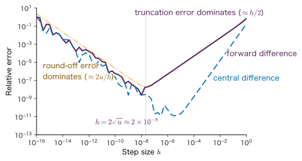

Appendix ASupplements on Calculus, Linear Algebra, and Numerical Computation
In the main text, there are places where we used a mathematical tool as a bare result and moved on: differentiating with respect to a vector, decomposing a symmetric matrix into its eigenvectors, splitting a multivariate Gaussian distribution into blocks to obtain a conditional distribution, and solving simultaneous equations by the Cholesky decomposition. This appendix collects those tools in one place, supplying the proofs omitted in the main text together with small numerical examples that can be checked by hand.
Sections A.1–A.3 cover matrix notation, differentiation with respect to a vector, and the diagonalization of symmetric matrices; Section A.4 covers the singular value decomposition; Sections A.5–A.7 cover Gaussian integrals, block matrices, and the Woodbury identity (the foundation of the computations for the multivariate Gaussian distribution and the Gaussian process); Sections A.8–A.10 cover the method of Lagrange multipliers, Jensen's inequality, and the gamma function; and Section A.11 covers cautions for handling numbers on a computer (floating point, loss of significance, log-sum-exp, the Cholesky decomposition, and the condition number). Each section begins with links to the chapters and sections of the main text that use it. You do not need to read in order: wherever the main text says “Appendix A,” read only the section you need.
Topics that appear in University Mathematics (the companion volume), such as determinants, inverse matrices, eigenvalues, the proof of the Gaussian integral, and the gamma function, are given only as key points with links; topics that do not appear there (the proof of the orthogonal diagonalization of symmetric matrices, positive definite matrices, the singular value decomposition, the Schur complement, the Woodbury identity, and numerical computation) are treated in detail. The examples in each section are designed so that they can be worked by hand with 2×2 or 3×3 matrices.
A.1 Notation for Vectors and Matrices and Matching Shapes
Where the main text uses this: all chapters. In particular Chapter 8, Section 8.2 (the design matrix and the normal equations), Chapter 10, Section 10.2 (the Gram matrix), Chapter 14, Section 14.3 (layers and the shapes of matrices), and Chapter 24, Section 24.2 (the convention of arranging a sequence in rows). The basics of matrix products, transposes, and determinants are in University Mathematics, Chapter 8, Section 8.1.
A.1.1 Conventions of this book
- Vectors are column vectors: $\bm{x}\in\R^{D}$ is $D$ real numbers arranged vertically (a $D\times1$ matrix), and we write its components as $x_1,\dots,x_D$. A horizontal arrangement is written with the transpose $\bm{x}^{\tp}$ (a $1\times D$ matrix).
- Matrices: $\bm{A}\in\R^{m\times n}$ has $m$ rows and $n$ columns, and we write its $(i,j)$ component as $A_{ij}$. When we want to make the size of the identity matrix $\bm{I}$ explicit, we write $\bm{I}_n$.
- Exception: only in Chapters 24–26, following the original paper, we use a matrix $\bm{X}\in\R^{T\times d_{\mathrm{model}}}$ that arranges the sequence in rows (the $t$th row is the vector at position $t$), and apply linear transformations by multiplying from the right ($\bm{Q}=\bm{X}\bm{W}_Q$). This is the same as arranging in rows the vectors $\bm{q}_t=\bm{W}_Q^{\tp}\bm{x}_t$ of the column-vector convention.
The matrix product $\bm{C}=\bm{A}\bm{B}$ is defined only when the inner sizes $n$ agree, as in $\bm{A}\in\R^{m\times n}$ and $\bm{B}\in\R^{n\times p}$; the result is $\bm{C}\in\R^{m\times p}$, with components
\begin{equation} \begin{aligned}&C_{ik}=\sum_{j=1}^{n}A_{ij}B_{jk}\\ &(i=1,\dots,m,\ k=1,\dots,p)\end{aligned} \label{eq:A-matmul} \end{equation}After writing down an equation, write out the size of each term and check that “the inner sizes agree” and that “the terms being added have the same size.” This check alone catches many forgotten transposes.
A.1.2 Dot product, outer product, transpose, and trace
For $\bm{a},\bm{b}\in\R^{n}$ of the same size,
- the dot product $\bm{a}^{\tp}\bm{b}=\sum_{i}a_ib_i$ is $(1\times n)(n\times1)=1\times1$, that is, a scalar. We have $\bm{a}^{\tp}\bm{b}=\bm{b}^{\tp}\bm{a}$. The square of the length is $\norm{\bm{a}}^{2}=\bm{a}^{\tp}\bm{a}$.
- the outer product (direct product) $\bm{a}\bm{b}^{\tp}$ is an $(n\times1)(1\times n)=n\times n$ matrix whose $(i,j)$ component is $a_ib_j$. Its rank is 1 (if $\bm{a},\bm{b}\ne\bm{0}$).
The transpose of a product reverses the order: $(\bm{A}\bm{B})^{\tp}=\bm{B}^{\tp}\bm{A}^{\tp}$. Checking by components, the $(k,i)$ component of the left-hand side is $C_{ik}=\sum_jA_{ij}B_{jk}$, and the $(k,i)$ component of the right-hand side is $\sum_j(\bm{B}^{\tp})_{kj}(\bm{A}^{\tp})_{ji}=\sum_jB_{jk}A_{ij}$, which is the same. The inverse is similar: $(\bm{A}\bm{B})^{-1}=\bm{B}^{-1}\bm{A}^{-1}$ (when $\bm{A},\bm{B}$ are invertible square matrices; this can be verified from $\bm{A}\bm{B}\bm{B}^{-1}\bm{A}^{-1}=\bm{I}$).
The sum of the diagonal components of a square matrix $\bm{A}\in\R^{n\times n}$ is called the trace, $\tr\bm{A}=\sum_iA_{ii}$. For $\bm{A}\in\R^{m\times n}$ and $\bm{B}\in\R^{n\times m}$,
\begin{equation} \begin{aligned}\tr(\bm{A}\bm{B})&=\sum_{i=1}^{m}\sum_{j=1}^{n}A_{ij}B_{ji}\\&=\sum_{j=1}^{n}\sum_{i=1}^{m}B_{ji}A_{ij}\\&=\tr(\bm{B}\bm{A})\end{aligned} \label{eq:A-trace-cyclic} \end{equation}holds (even though $\bm{A}\bm{B}$ is $m\times m$ and $\bm{B}\bm{A}$ is $n\times n$, so their sizes differ, the traces are equal). From this property, a quadratic form (a scalar) can be rewritten using the trace.
$$ \bm{x}^{\tp}\bm{A}\bm{x}=\tr(\bm{x}^{\tp}\bm{A}\bm{x})=\tr(\bm{A}\bm{x}\bm{x}^{\tp}). $$The first equality holds because the trace of a 1×1 matrix is its value itself, and in the second we moved $\bm{x}^{\tp}$ to the back using Eq. \eqref{eq:A-trace-cyclic}. Combined with the expectation (expected value), this gives $\Ex[\bm{x}^{\tp}\bm{A}\bm{x}]=\tr(\bm{A}\,\Ex[\bm{x}\bm{x}^{\tp}])$, so the expectation of a quadratic form can be written with the covariance matrix.
A.1.3 The design matrix has “one row per data point”
The design matrix $\bm{\Phi}\in\R^{N\times M}$ of Chapter 8 has as its $n$th row the transpose $\bm{\phi}_n^{\tp}$ of the feature vector of data point $n$ ($\bm{\phi}_n=\bm{\phi}(\bm{x}_n)\in\R^{M}$). Then
\begin{equation} \begin{aligned}\bm{\Phi}^{\tp}\bm{\Phi}&=\sum_{n=1}^{N}\bm{\phi}_n\bm{\phi}_n^{\tp}\in\R^{M\times M},\\ \bm{\Phi}^{\tp}\bm{y}&=\sum_{n=1}^{N}\bm{\phi}_n\,y_n\in\R^{M}\end{aligned} \label{eq:A-phi-sum} \end{equation}so these split into sums over data points. By Eq. \eqref{eq:A-matmul}, the $(i,j)$ component of $\bm{\Phi}^{\tp}\bm{\Phi}$ is $\sum_n\Phi_{ni}\Phi_{nj}=\sum_n\phi_i(\bm{x}_n)\phi_j(\bm{x}_n)$, which equals the sum over $n$ of the $(i,j)$ component $\phi_i(\bm{x}_n)\phi_j(\bm{x}_n)$ of the outer product $\bm{\phi}_n\bm{\phi}_n^{\tp}$. On the other hand, the $(n,m)$ component of $\bm{\Phi}\bm{\Phi}^{\tp}\in\R^{N\times N}$, with the order reversed, is $\bm{\phi}_n^{\tp}\bm{\phi}_m$, a table of dot products between data points (the Gram matrix of Chapter 10).
| Quantity | Size | Chapter |
|---|---|---|
| Design matrix $\bm{\Phi}$ | $N\times M$ | Chapter 8 |
| $\bm{\Phi}^{\tp}\bm{\Phi}$, posterior covariance of the coefficients $\bm{S}_N$ | $M\times M$ | Chapter 8 |
| $\bm{\Phi}\bm{\Phi}^{\tp}$, Gram matrix $\bm{K}$, $\bm{K}_y$ | $N\times N$ | Chapters 10 and 12 |
| $\bm{w}$, $\bm{\Phi}^{\tp}\bm{y}$ | $M$ (column) | Chapter 8 |
| $\bm{y}$, $\bm{k}_*$, dual variable $\bm{a}$ | $N$ (column) | Chapters 10 and 12 |
| Covariance matrix $\bm{\Sigma}$ | $D\times D$ | Chapter 3 |
| Weight $\bm{W}^{(l)}$, gradient $\bm{\delta}^{(l)}\bm{z}^{(l-1)\tp}$ | $D_l\times D_{l-1}$ | Chapters 14 and 15 |
| $\bm{Q}\bm{K}^{\tp}$ (row convention) | $T\times T$ | Chapter 24 |
Example A.1: Computing a design-matrix product in two ways
Using the line features $\bm{\phi}(x)=(1,x)^{\tp}$ at three points $x_n=2,\ 0,\ -1$, we have $\bm{\Phi}=\begin{pmatrix}1&2\\1&0\\1&-1\end{pmatrix}\in\R^{3\times2}$. Let $\bm{y}=(3,1,0)^{\tp}$. (1) Write down the sizes of $\bm{\Phi}^{\tp}\bm{\Phi}$, $\bm{\Phi}^{\tp}\bm{y}$, and $\bm{\Phi}\bm{\Phi}^{\tp}$. (2) Compute $\bm{\Phi}^{\tp}\bm{\Phi}$ in two ways, using Eq. \eqref{eq:A-matmul} and Eq. \eqref{eq:A-phi-sum}. (3) Find $\bm{\Phi}\bm{\Phi}^{\tp}$ and verify that $\tr(\bm{\Phi}\bm{\Phi}^{\tp})=\tr(\bm{\Phi}^{\tp}\bm{\Phi})$.
Solution. (1) $\bm{\Phi}^{\tp}\bm{\Phi}$ is $(2\times3)(3\times2)=2\times2$, $\bm{\Phi}^{\tp}\bm{y}$ is $(2\times3)(3\times1)=2\times1$, and $\bm{\Phi}\bm{\Phi}^{\tp}$ is $(3\times2)(2\times3)=3\times3$.
(2) By components: the $(1,1)$ component $=1+1+1=3$, the $(1,2)$ component $=1\cdot2+1\cdot0+1\cdot(-1)=1$, and the $(2,2)$ component $=4+0+1=5$. By the sum of outer products:
$$ \begin{aligned} &\begin{pmatrix}1&2\\2&4\end{pmatrix}+\begin{pmatrix}1&0\\0&0\end{pmatrix}+\begin{pmatrix}1&-1\\-1&1\end{pmatrix}\\ &=\begin{pmatrix}3&1\\1&5\end{pmatrix}. \end{aligned} $$Both give the same result. Also, $\bm{\Phi}^{\tp}\bm{y}=3\begin{pmatrix}1\\2\end{pmatrix}+1\begin{pmatrix}1\\0\end{pmatrix}+0\begin{pmatrix}1\\-1\end{pmatrix}=\begin{pmatrix}4\\6\end{pmatrix}$.
(3) The $(n,m)$ component is $\bm{\phi}_n^{\tp}\bm{\phi}_m=1+x_nx_m$, so
$$ \bm{\Phi}\bm{\Phi}^{\tp}=\begin{pmatrix}5&1&-1\\1&1&1\\-1&1&2\end{pmatrix}. $$The trace is $5+1+2=8$, and the trace of $\bm{\Phi}^{\tp}\bm{\Phi}$ is $3+5=8$, which agree. Even for two matrices of different sizes, the traces are equal (Eq. \eqref{eq:A-trace-cyclic}).
A.2 Differentiation with Respect to a Vector
Where it is used in the main text: Chapter 7, Section 7.1 (gradient), Chapter 8, Section 8.2 (normal equations), Chapter 10, Section 10.2 (gradient of ridge regression), Chapter 12, Section 12.7 (gradient of the log marginal likelihood), Chapter 15, Section 15.2 (backpropagation). The definition and geometric meaning of the gradient are in University Mathematics, Chapter 18, Section 18.4, and partial derivatives are in Chapter 6, Section 6.2 of the same book.
A.2.1 Definition: The gradient has the same shape as the original vector
Definition A.1: Differentiation of a scalar function with respect to a vector
For a scalar-valued function $f(\bm{w})$ of $\bm{w}\in\R^{M}$, the column vector formed by arranging the partial derivatives vertically
$$ \pdiff{f}{\bm{w}}\equiv\nabla f(\bm{w})=\begin{pmatrix}\partial f/\partial w_1\\ \vdots\\ \partial f/\partial w_M\end{pmatrix}\in\R^{M} $$is called the derivative (gradient) of $f$ with respect to $\bm{w}$. For differentiation with respect to a matrix $\bm{W}\in\R^{m\times n}$, too, we define $\partial f/\partial\bm{W}$ to be the $m\times n$ matrix whose $(i,j)$ component is $\partial f/\partial W_{ij}$.
This book uses the uniform convention that “the result of differentiation has the same shape as the variable being differentiated” (some references use a row-vector convention instead, so take care with transposes when using formulas from other books). Under this convention, the shapes of the two sides of the update rule $\bm{w}\leftarrow\bm{w}-\eta\,\partial L/\partial\bm{w}$ match naturally.
A.2.2 Basic formulas and their derivation by components
Formula A.1: Frequently used derivatives with respect to a vector
Let $\bm{a}\in\R^{M}$, $\bm{A}\in\R^{M\times M}$, $\bm{y}\in\R^{N}$, and $\bm{\Phi}\in\R^{N\times M}$ be constants that do not depend on $\bm{w}$.
$$ \begin{aligned} &\text{(1)}\quad \pdiff{(\bm{a}^{\tp}\bm{w})}{\bm{w}}=\pdiff{(\bm{w}^{\tp}\bm{a})}{\bm{w}}=\bm{a},\\ &\text{(2)}\quad \pdiff{(\bm{w}^{\tp}\bm{A}\bm{w})}{\bm{w}}=(\bm{A}+\bm{A}^{\tp})\bm{w},\\ &\text{(3)}\quad \pdiff{}{\bm{w}}\,\frac12\norm{\bm{y}-\bm{\Phi}\bm{w}}^{2}=-\bm{\Phi}^{\tp}(\bm{y}-\bm{\Phi}\bm{w}). \end{aligned} $$If $\bm{A}$ is symmetric, (2) becomes $2\bm{A}\bm{w}$.
Derivation
(1) Differentiating $\bm{a}^{\tp}\bm{w}=\sum_{i=1}^{M}a_iw_i$ partially with respect to $w_k$, only the term with $i=k$ survives, giving $a_k$. Arranging these vertically for $k=1,\dots,M$ gives $\bm{a}$.
(2) Written in components, the quadratic form is $\bm{w}^{\tp}\bm{A}\bm{w}=\sum_{i=1}^{M}\sum_{j=1}^{M}w_iA_{ij}w_j$. When we differentiate partially with respect to $w_k$, the derivative of the product $w_iw_j$ is $\dfrac{\partial w_i}{\partial w_k}w_j+w_i\dfrac{\partial w_j}{\partial w_k}$, where $\partial w_i/\partial w_k$ is 1 if $i=k$ and 0 otherwise. Therefore
$$ \begin{aligned} \pdiff{}{w_k}\sum_{i,j}w_iA_{ij}w_j &=\sum_{j}A_{kj}w_j+\sum_{i}w_iA_{ik}\\ &=(\bm{A}\bm{w})_k+(\bm{A}^{\tp}\bm{w})_k . \end{aligned} $$The first term comes from the terms with $i=k$, and the second term from the terms with $j=k$. Arranging vertically gives $(\bm{A}+\bm{A}^{\tp})\bm{w}$.
(3) Let $\bm{r}=\bm{y}-\bm{\Phi}\bm{w}$ and expand. Since $\bm{w}^{\tp}\bm{\Phi}^{\tp}\bm{y}$ is a scalar, it is unchanged by transposition and equals $\bm{y}^{\tp}\bm{\Phi}\bm{w}$; using this, we obtain
$$ \begin{aligned} \frac12\bm{r}^{\tp}\bm{r} &=\frac12\bigl(\bm{y}^{\tp}\bm{y}-2\,\bm{y}^{\tp}\bm{\Phi}\bm{w}+\bm{w}^{\tp}\bm{\Phi}^{\tp}\bm{\Phi}\bm{w}\bigr). \end{aligned} $$The first term does not depend on $\bm{w}$. The second term has the form of (1) with $\bm{a}=\bm{\Phi}^{\tp}\bm{y}$, and the third has the form of (2) with $\bm{A}=\bm{\Phi}^{\tp}\bm{\Phi}$ (symmetric), so the derivative is $\frac12\bigl(-2\bm{\Phi}^{\tp}\bm{y}+2\bm{\Phi}^{\tp}\bm{\Phi}\bm{w}\bigr)=-\bm{\Phi}^{\tp}(\bm{y}-\bm{\Phi}\bm{w})$. Setting this equal to $\bm{0}$ gives the normal equations $\bm{\Phi}^{\tp}\bm{\Phi}\bm{w}=\bm{\Phi}^{\tp}\bm{y}$ of Chapter 8. By (2), the derivative of the ridge regression penalty $\frac{\lambda}{2}\norm{\bm{w}}^{2}=\frac{\lambda}{2}\bm{w}^{\tp}\bm{I}\bm{w}$ is $\lambda\bm{w}$.
∎
The $(k,l)$ component of the matrix $\bm{H}$ formed by arranging the second derivatives (the Hessian matrix) is $\partial^{2}f/\partial w_k\partial w_l$. Differentiating the $k$th component $\sum_j(A_{kj}+A_{jk})w_j$ of the gradient in (2) with respect to $w_l$ gives $A_{kl}+A_{lk}$, so the Hessian matrix of $\bm{w}^{\tp}\bm{A}\bm{w}$ is $\bm{A}+\bm{A}^{\tp}$, and the Hessian matrix of (3) is $\bm{\Phi}^{\tp}\bm{\Phi}$ (the matrix that determined the convergence of gradient descent in Chapter 7).
A.2.3 The chain rule and differentiation with respect to a matrix
Suppose $f(\bm{z})$ is determined via $\bm{z}=\bm{g}(\bm{w})\in\R^{K}$, and let $\bm{J}$ be the $K\times M$ matrix (the Jacobian matrix) whose $(i,j)$ component is $\partial z_i/\partial w_j$. Then the chain rule $\dfrac{\partial f}{\partial w_j}=\sum_{i}\dfrac{\partial f}{\partial z_i}\dfrac{\partial z_i}{\partial w_j}$ can be written as
\begin{equation} \pdiff{f}{\bm{w}}=\bm{J}^{\tp}\,\pdiff{f}{\bm{z}} \label{eq:A-chain} \end{equation}(the shapes match, since $(M\times K)(K\times1)=M\times1$). For example, if $\bm{z}=\bm{\Phi}\bm{w}$, then $\bm{J}=\bm{\Phi}$, and from $\partial f/\partial\bm{z}=-(\bm{y}-\bm{z})$ for $f=\frac12\norm{\bm{y}-\bm{z}}^{2}$ we obtain Formula A.1 (3) once more.
For one layer of a neural network, $\bm{a}=\bm{W}\bm{z}+\bm{b}$ (with $\bm{W}\in\R^{D_l\times D_{l-1}}$), we have $a_i=\sum_jW_{ij}z_j+b_i$, so $W_{ij}$ affects only $a_i$, and $\partial a_i/\partial W_{ij}=z_j$. Hence, letting $\delta_i\equiv\partial L/\partial a_i$, we get $\partial L/\partial W_{ij}=\delta_iz_j$, which in matrix form is the outer product $\partial L/\partial\bm{W}=\bm{\delta}\bm{z}^{\tp}$ (the formula for backpropagation in Chapter 15; its shape $(D_l\times1)(1\times D_{l-1})$ is the same as that of $\bm{W}$).
A.2.4 Derivatives of matrix functions — the inverse matrix and the determinant
In learning the hyperparameters of a Gaussian process (Chapter 12, Section 12.7), we need the derivative when a matrix $\bm{K}(\theta)\in\R^{N\times N}$ (symmetric positive definite; Section A.3) depends on a scalar $\theta$. Here $\bm{K}'\equiv\partial\bm{K}/\partial\theta$ is the component-wise derivative.
Formula A.2: Derivatives of the inverse matrix and the log-determinant
\begin{align} \pdiff{\bm{K}^{-1}}{\theta}&=-\bm{K}^{-1}\bm{K}'\bm{K}^{-1} \label{eq:A-dinv}\\ \pdiff{\ln\abs{\bm{K}}}{\theta}&=\tr\bigl(\bm{K}^{-1}\bm{K}'\bigr) \label{eq:A-dlogdet} \end{align}Proof
Eq. \eqref{eq:A-dinv}: Differentiate both sides of $\bm{K}\bm{K}^{-1}=\bm{I}$ with respect to $\theta$. The product rule holds for matrices as well, with the order preserved (just apply the product rule to the component $\sum_jK_{ij}(K^{-1})_{jk}$), so
$$ \bm{K}'\bm{K}^{-1}+\bm{K}\,\pdiff{\bm{K}^{-1}}{\theta}=\bm{O}. $$Multiplying by $\bm{K}^{-1}$ from the left and moving a term to the other side, we obtain Eq. \eqref{eq:A-dinv}.
Eq. \eqref{eq:A-dlogdet}: For small $h$, $\bm{K}(\theta+h)=\bm{K}+h\bm{K}'+O(h^{2})$. Letting $\bm{M}\equiv\bm{K}^{-1}\bm{K}'$, we have $\bm{K}(\theta+h)=\bm{K}\bigl(\bm{I}+h\bm{M}+O(h^{2})\bigr)$, so by the multiplicative property of the determinant (University Mathematics, Chapter 8, Section 8.5),
$$ \abs{\bm{K}(\theta+h)}=\abs{\bm{K}}\,\abs{\bm{I}+h\bm{M}+O(h^{2})}. $$We examine the determinant on the right using the definition of the determinant (a sum over permutations $\sigma$) $\sum_{\sigma}\sgn(\sigma)\prod_{i}\bigl(\delta_{i\sigma(i)}+hM_{i\sigma(i)}+O(h^{2})\bigr)$. The term for the identity permutation is $\prod_i(1+hM_{ii}+O(h^{2}))$ $=1+h\sum_iM_{ii}+O(h^{2})$. A permutation $\sigma$ other than the identity has $\sigma(i)\ne i$ for at least two indices $i$, and for those the factor is $O(h)$ because $\delta_{i\sigma(i)}=0$, so the whole term is $O(h^{2})$. Therefore
$$ \abs{\bm{I}+h\bm{M}+O(h^{2})}=1+h\tr\bm{M}+O(h^{2}). $$Assuming $\abs{\bm{K}}\gt0$, take the logarithm and use $\ln(1+\epsilon)=\epsilon+O(\epsilon^{2})$ to obtain
$$ \begin{aligned}&\ln\abs{\bm{K}(\theta+h)}-\ln\abs{\bm{K}(\theta)}\\&=h\tr\bm{M}+O(h^{2}).\end{aligned} $$Dividing both sides by $h$ and letting $h\to0$ gives Eq. \eqref{eq:A-dlogdet}.
∎
Example A.2: Checking with components
(1) For $\bm{A}=\begin{pmatrix}1&2\\0&3\end{pmatrix}$ (not symmetric), write $f(\bm{w})=\bm{w}^{\tp}\bm{A}\bm{w}$ in components, find its gradient, and verify that it agrees with Formula A.1 (2). Also find the value at $\bm{w}=(1,1)^{\tp}$. (2) For $\bm{K}(\theta)=\begin{pmatrix}1+\theta&1/2\\1/2&1\end{pmatrix}$, find $\partial\ln\abs{\bm{K}}/\partial\theta$ at $\theta=0$ both directly and by Eq. \eqref{eq:A-dlogdet}.
Solution. (1) $f=w_1^{2}+2w_1w_2+3w_2^{2}$ (since $A_{21}=0$, the only cross term is $A_{12}w_1w_2=2w_1w_2$). Taking partial derivatives,
$$ \pdiff{f}{\bm{w}}=\begin{pmatrix}2w_1+2w_2\\2w_1+6w_2\end{pmatrix}. $$On the other hand, $\bm{A}+\bm{A}^{\tp}=\begin{pmatrix}2&2\\2&6\end{pmatrix}$, and $(\bm{A}+\bm{A}^{\tp})\bm{w}$ is the same as above. At $\bm{w}=(1,1)^{\tp}$ it is $(4,8)^{\tp}$. Note that $2\bm{A}\bm{w}=(6,6)^{\tp}$ is wrong: one must not use “$2\bm{A}\bm{w}$” for a non-symmetric matrix.
(2) Directly: $\abs{\bm{K}}=(1+\theta)\cdot1-\frac14=\frac34+\theta$, so $\partial\ln\abs{\bm{K}}/\partial\theta=1/(\frac34+\theta)$, which is $\frac43$ at $\theta=0$. By the formula: at $\theta=0$, $\bm{K}'=\begin{pmatrix}1&0\\0&0\end{pmatrix}$, and
$$ \begin{aligned} \bm{K}^{-1}&=\frac{1}{3/4}\begin{pmatrix}1&-1/2\\-1/2&1\end{pmatrix}\\ &=\begin{pmatrix}4/3&-2/3\\-2/3&4/3\end{pmatrix},\\ \bm{K}^{-1}\bm{K}'&=\begin{pmatrix}4/3&0\\-2/3&0\end{pmatrix},\\ \tr(\bm{K}^{-1}\bm{K}')&=\frac43 . \end{aligned} $$The two agree. Since $\bm{K}'$ moves only the $(1,1)$ component, the answer is exactly $(\bm{K}^{-1})_{11}$.
A.3 Eigendecomposition, Diagonalization of Symmetric Matrices, and Positive Definite Matrices
Where the main text uses this: Chapter 3, Section 3.6 (eigenvalues of a covariance matrix and ellipses), Chapter 7, Section 7.2 (coordinates along the eigenvectors of the Hessian matrix), Chapter 10, Section 10.4 (positive semidefinite Gram matrices), Chapter 12, Section 12.8 (the positive definite $\bm{K}_y$), Chapter 18, Section 18.2 (PCA). The definition of eigenvalues and eigenvectors, how to find them, and the diagonalization of general matrices are in University Mathematics, Chapter 12, Section 12.1 and Section 12.3. Here we prove the fact, absent from University Mathematics, that a symmetric matrix can be diagonalized by an orthogonal matrix, and we treat positive definite matrices.
A.3.1 Diagonalization of real symmetric matrices
A square matrix $\bm{Q}\in\R^{D\times D}$ satisfying $\bm{Q}^{\tp}\bm{Q}=\bm{I}$ is called an orthogonal matrix. This is the same as saying that the columns $\bm{q}_1,\dots,\bm{q}_D$ are mutually orthogonal vectors of length 1 (an orthonormal system), and it also follows that $\bm{Q}^{-1}=\bm{Q}^{\tp}$ and $\bm{Q}\bm{Q}^{\tp}=\bm{I}$, that is, $\sum_i\bm{q}_i\bm{q}_i^{\tp}=\bm{I}$. Multiplying by an orthogonal matrix does not change length ($\norm{\bm{Q}\bm{x}}^{2}=\bm{x}^{\tp}\bm{Q}^{\tp}\bm{Q}\bm{x}=\norm{\bm{x}}^{2}$).
Theorem A.3: Orthogonal diagonalization of a real symmetric matrix (the spectral theorem)
If $\bm{S}\in\R^{D\times D}$ is symmetric ($\bm{S}^{\tp}=\bm{S}$), then the following hold.
(1) All eigenvalues are real, and the eigenvectors can be chosen to be real vectors.
(2) Eigenvectors belonging to distinct eigenvalues are orthogonal.
(3) There exist an orthogonal matrix $\bm{Q}=(\bm{q}_1,\dots,\bm{q}_D)$ and real numbers $\lambda_1,\dots,\lambda_D$ such that
$$ \begin{aligned}\bm{S}&=\bm{Q}\bm{\Lambda}\bm{Q}^{\tp}=\sum_{i=1}^{D}\lambda_i\bm{q}_i\bm{q}_i^{\tp},\\ \bm{\Lambda}&=\diag(\lambda_1,\dots,\lambda_D).\end{aligned} $$Here $\bm{S}\bm{q}_i=\lambda_i\bm{q}_i$, and the $\bm{q}_i$ form an orthonormal system (this holds even when eigenvalues coincide).
Proof
(1) The characteristic equation $\abs{\bm{S}-\lambda\bm{I}}=0$ is an equation of degree $D$ in $\lambda$, so by the fundamental theorem of algebra it has at least one complex root $\lambda$. For a corresponding eigenvector $\bm{v}\in\mathbb{C}^{D}$ ($\bm{v}\ne\bm{0}$) we have $\bm{S}\bm{v}=\lambda\bm{v}$. Since $\bm{S}$ is a real matrix, taking the complex conjugate of both sides gives $\bm{S}\bar{\bm{v}}=\bar{\lambda}\bar{\bm{v}}$. We compute the scalar $\bar{\bm{v}}^{\tp}\bm{S}\bm{v}$ in two ways.
$$ \begin{aligned} \bar{\bm{v}}^{\tp}\bm{S}\bm{v}&=\bar{\bm{v}}^{\tp}(\lambda\bm{v})=\lambda\,\bar{\bm{v}}^{\tp}\bm{v},\\ \bar{\bm{v}}^{\tp}\bm{S}\bm{v}&=(\bm{S}^{\tp}\bar{\bm{v}})^{\tp}\bm{v}=(\bm{S}\bar{\bm{v}})^{\tp}\bm{v}=\bar{\lambda}\,\bar{\bm{v}}^{\tp}\bm{v}. \end{aligned} $$In the second line we used $\bm{S}^{\tp}=\bm{S}$. Since $\bar{\bm{v}}^{\tp}\bm{v}=\sum_i\abs{v_i}^{2}\gt0$, we get $\lambda=\bar{\lambda}$; that is, $\lambda$ is real. Then $\bm{S}-\lambda\bm{I}$ is a real matrix that is not invertible, so there is a real vector $\bm{u}\ne\bm{0}$ with $(\bm{S}-\lambda\bm{I})\bm{u}=\bm{0}$ (it suffices to carry out the row reduction within the real numbers; see University Mathematics, Chapter 9, Section 9.3).
(2) Suppose $\bm{S}\bm{u}=\lambda\bm{u}$, $\bm{S}\bm{v}=\mu\bm{v}$, and $\lambda\ne\mu$. Then $\bm{u}^{\tp}\bm{S}\bm{v}=\mu\,\bm{u}^{\tp}\bm{v}$. On the other hand, $\bm{u}^{\tp}\bm{S}\bm{v}=(\bm{S}\bm{u})^{\tp}\bm{v}=\lambda\,\bm{u}^{\tp}\bm{v}$. Taking the difference gives $(\lambda-\mu)\bm{u}^{\tp}\bm{v}=0$, and since $\lambda\ne\mu$, we get $\bm{u}^{\tp}\bm{v}=0$.
(3) We use induction on $D$. For $D=1$, $\bm{S}=(s)$ and $\bm{Q}=(1)$ will do. Suppose the statement holds in dimension $D-1$. By (1) there are a real eigenvalue $\lambda_1$ and a real eigenvector $\bm{q}_1$ of length 1. Adding $D-1$ vectors to $\bm{q}_1$ we build an orthonormal basis of $\R^{D}$ (Gram–Schmidt orthogonalization), and we let $\bm{P}_2\in\R^{D\times(D-1)}$ be the matrix whose columns are the last $D-1$ of these vectors. Then $\bm{P}=(\bm{q}_1,\bm{P}_2)$ is an orthogonal matrix, and $\bm{P}_2^{\tp}\bm{q}_1=\bm{0}$. We therefore have
$$ \bm{P}^{\tp}\bm{S}\bm{P}=\begin{pmatrix}\bm{q}_1^{\tp}\bm{S}\bm{q}_1&\bm{q}_1^{\tp}\bm{S}\bm{P}_2\\ \bm{P}_2^{\tp}\bm{S}\bm{q}_1&\bm{P}_2^{\tp}\bm{S}\bm{P}_2\end{pmatrix}. $$The upper left entry is $\bm{q}_1^{\tp}(\lambda_1\bm{q}_1)=\lambda_1$, the lower left entry is $\bm{P}_2^{\tp}(\lambda_1\bm{q}_1)=\bm{0}$, and the upper right entry is the transpose of the lower left one (because $\bm{S}$ is symmetric), namely $\bm{0}^{\tp}$. The lower right block $\bm{S}_2\equiv\bm{P}_2^{\tp}\bm{S}\bm{P}_2\in\R^{(D-1)\times(D-1)}$ is symmetric, so by the induction hypothesis there is an orthogonal matrix $\bm{Q}_2$ with $\bm{Q}_2^{\tp}\bm{S}_2\bm{Q}_2=\diag(\lambda_2,\dots,\lambda_D)$.
$$ \bm{Q}=\bm{P}\begin{pmatrix}1&\bm{0}^{\tp}\\ \bm{0}&\bm{Q}_2\end{pmatrix} $$Defining $\bm{Q}$ in this way, it is an orthogonal matrix because it is a product of orthogonal matrices, and $\bm{Q}^{\tp}\bm{S}\bm{Q}=\diag(\lambda_1,\lambda_2,\dots,\lambda_D)$. Multiplying by $\bm{Q}$ from the left and by $\bm{Q}^{\tp}$ from the right gives $\bm{S}=\bm{Q}\bm{\Lambda}\bm{Q}^{\tp}$. Writing $\bm{Q}\bm{\Lambda}\bm{Q}^{\tp}$ in terms of the columns gives $\sum_i\lambda_i\bm{q}_i\bm{q}_i^{\tp}$.
∎
From this decomposition the following facts, used in the main text, follow immediately (we use the fact that $\bm{q}_i^{\tp}\bm{q}_j$ is 1 for $i=j$ and 0 otherwise).
- Inverse and powers: if all $\lambda_i\ne0$, then $\bm{S}^{-1}=\sum_i\lambda_i^{-1}\bm{q}_i\bm{q}_i^{\tp}$. This can be checked by multiplying by $\bm{S}$, which gives $\sum_i\bm{q}_i\bm{q}_i^{\tp}=\bm{I}$. Similarly, $\bm{S}^{k}=\sum_i\lambda_i^{k}\bm{q}_i\bm{q}_i^{\tp}$.
- Trace and determinant: $\tr\bm{S}=\tr(\bm{\Lambda}\bm{Q}^{\tp}\bm{Q})=\sum_i\lambda_i$ (Eq. \eqref{eq:A-trace-cyclic}), and $\abs{\bm{S}}=\abs{\bm{Q}}\abs{\bm{\Lambda}}\abs{\bm{Q}^{\tp}}=\prod_i\lambda_i$ (since $\abs{\bm{Q}}^{2}=\abs{\bm{Q}^{\tp}\bm{Q}}=1$).
- Quadratic form: letting $c_i\equiv\bm{q}_i^{\tp}\bm{x}$ (the coordinate of $\bm{x}$ along $\bm{q}_i$), we have
The second equality follows from $\norm{\bm{Q}^{\tp}\bm{x}}=\norm{\bm{x}}$. The ellipse of the Mahalanobis distance in Chapter 3 and the statement in Chapter 7 that “convergence proceeds independently along each eigenvector direction” are both restatements of this equation.
A.3.2 Positive definite matrices
Definition A.2: Positive definite and positive semidefinite
A symmetric matrix $\bm{S}\in\R^{D\times D}$ is called positive definite if $\bm{x}^{\tp}\bm{S}\bm{x}\gt0$ for all $\bm{x}\ne\bm{0}$, and positive semidefinite if $\bm{x}^{\tp}\bm{S}\bm{x}\ge0$.
Theorem A.4: Positive definiteness and eigenvalues
A symmetric matrix $\bm{S}$ is positive definite if and only if all its eigenvalues are positive (and likewise, it is positive semidefinite if and only if all eigenvalues are at least 0). If it is positive definite, then $\bm{S}$ is invertible and $\abs{\bm{S}}\gt0$, $\bm{S}^{-1}$ is also positive definite, and all diagonal entries are positive.
Proof
Suppose all $\lambda_i\gt0$. If $\bm{x}\ne\bm{0}$, then in Eq. \eqref{eq:A-quad-eig} we have $\sum_ic_i^{2}=\norm{\bm{x}}^{2}\gt0$, so at least one $c_i\ne0$, and $\bm{x}^{\tp}\bm{S}\bm{x}=\sum_i\lambda_ic_i^{2}\gt0$. Conversely, if the matrix is positive definite, putting $\bm{x}=\bm{q}_i$ gives $\lambda_i=\bm{q}_i^{\tp}\bm{S}\bm{q}_i\gt0$. For the second half: $\abs{\bm{S}}=\prod\lambda_i\gt0$; the eigenvalues of $\bm{S}^{-1}$ are $1/\lambda_i\gt0$; and the diagonal entries satisfy $S_{ii}=\bm{e}_i^{\tp}\bm{S}\bm{e}_i\gt0$ ($\bm{e}_i$ is the unit vector whose $i$th component alone is 1).
∎
The positive definite and positive semidefinite matrices that appear in this book are the following.
- $\bm{\Phi}^{\tp}\bm{\Phi}$ is positive semidefinite: $\bm{x}^{\tp}\bm{\Phi}^{\tp}\bm{\Phi}\bm{x}=\norm{\bm{\Phi}\bm{x}}^{2}\ge0$. If the columns of $\bm{\Phi}$ are linearly independent, then $\bm{\Phi}\bm{x}\ne\bm{0}$ for $\bm{x}\ne\bm{0}$, so it is positive definite. For the same reason, the Gram matrix $\bm{\Phi}\bm{\Phi}^{\tp}$ is also positive semidefinite.
- A covariance matrix is positive semidefinite: $\bm{a}^{\tp}\bm{\Sigma}\bm{a}=\Var[\bm{a}^{\tp}\bm{x}]\ge0$ (Chapter 2, Section 2.5).
- If $\bm{K}$ is positive semidefinite and $\sigma^{2}\gt0$, then $\bm{K}_y=\bm{K}+\sigma^{2}\bm{I}$ is positive definite and its eigenvalues are at least $\sigma^{2}$ (an eigenvector of $\bm{K}$ is also an eigenvector of $\bm{K}_y$, with the eigenvalue increased by $\sigma^{2}$). The same holds for $\bm{\Phi}^{\tp}\bm{\Phi}+\lambda\bm{I}$ in ridge regression.
For a 2×2 symmetric matrix $\bm{S}=\begin{pmatrix}a&b\\b&c\end{pmatrix}$, being positive definite is equivalent to “$a\gt0$ and $ac-b^{2}\gt0$.” When $a\gt0$, this can be seen from completing the square, which gives
$$ \begin{aligned} &ax_1^{2}+2bx_1x_2+cx_2^{2}\\ &=a\Bigl(x_1+\frac{b}{a}x_2\Bigr)^{2}+\frac{ac-b^{2}}{a}x_2^{2} \end{aligned} $$(if $a\le0$, then $\bm{x}=(1,0)^{\tp}$ does not give a positive value). For a general size, there is a test (Sylvester's criterion) that all the determinants of the submatrices cut out from the upper left are positive, but on a computer it is more practical to decide by whether the Cholesky decomposition of Section A.11 succeeds.
For a positive semidefinite $\bm{S}$ there is a “square root” $\bm{S}^{1/2}\equiv\sum_i\sqrt{\lambda_i}\,\bm{q}_i\bm{q}_i^{\tp}$ (that $(\bm{S}^{1/2})^{2}=\bm{S}$ can be checked with the formula for powers above). When generating correlated Gaussian random numbers, one uses the computationally cheaper Cholesky decomposition $\bm{L}$ ($\bm{S}=\bm{L}\bm{L}^{\tp}$, Section A.11) in place of the square root.
A.3.3 The Rayleigh quotient — maximum and minimum of a quadratic form
For a vector $\bm{u}$ of length 1, $\sum_ic_i^{2}=1$ in Eq. \eqref{eq:A-quad-eig}, so $\bm{u}^{\tp}\bm{S}\bm{u}=\sum_i\lambda_ic_i^{2}$ is a weighted average of the eigenvalues. Arranging the eigenvalues in decreasing order $\lambda_1\ge\dots\ge\lambda_D$, we have
\begin{equation} \lambda_D\le\bm{u}^{\tp}\bm{S}\bm{u}\le\lambda_1 \label{eq:A-rayleigh} \end{equation}and the upper limit is attained exactly at $\bm{u}=\bm{q}_1$, the lower limit at $\bm{u}=\bm{q}_D$. PCA in Chapter 18 (the direction that maximizes the variance of the projection $\bm{u}^{\tp}\bm{S}\bm{u}$ is the eigenvector of the largest eigenvalue) and the upper limit of the learning rate in Chapter 7 (the curvature in the steepest direction is $\lambda_{\max}$) rest on this inequality. A derivation of the same result by the method of Lagrange multipliers is given in Example A.8 of Section A.8.
Example A.3: Diagonalizing a 2×2 symmetric matrix
For $\bm{S}=\begin{pmatrix}5&2\\2&2\end{pmatrix}$: (1) Find the eigenvalues and eigenvectors of length 1, and verify that the eigenvectors are orthogonal. (2) Verify that $\bm{S}=\sum_i\lambda_i\bm{q}_i\bm{q}_i^{\tp}$, and determine whether it is positive definite. (3) Find $\bm{S}^{-1}$ from the eigendecomposition and compare it with the formula for the inverse of a 2×2 matrix. (4) Compute the quadratic form for $\bm{x}=(1,1)^{\tp}$ both directly and by Eq. \eqref{eq:A-quad-eig}.
Solution. (1) From $\abs{\bm{S}-\lambda\bm{I}}=(5-\lambda)(2-\lambda)-4$ $=\lambda^{2}-7\lambda+6$ $=(\lambda-6)(\lambda-1)$ we get $\lambda_1=6$, $\lambda_2=1$. For $\lambda=6$: $(5-6)x+2y=0$ gives $y=x/2$, so $\bm{q}_1=(2,1)^{\tp}/\sqrt5$. For $\lambda=1$: $4x+2y=0$ gives $y=-2x$, so $\bm{q}_2=(1,-2)^{\tp}/\sqrt5$. Then $\bm{q}_1^{\tp}\bm{q}_2=(2-2)/5=0$.
(2) Since $\bm{q}_1\bm{q}_1^{\tp}=\frac15\begin{pmatrix}4&2\\2&1\end{pmatrix}$ and $\bm{q}_2\bm{q}_2^{\tp}=\frac15\begin{pmatrix}1&-2\\-2&4\end{pmatrix}$,
$$ \begin{aligned} 6\,\bm{q}_1\bm{q}_1^{\tp}+1\,\bm{q}_2\bm{q}_2^{\tp} &=\frac15\begin{pmatrix}24+1&12-2\\12-2&6+4\end{pmatrix}\\ &=\begin{pmatrix}5&2\\2&2\end{pmatrix}. \end{aligned} $$The eigenvalues are 6 and 1, both positive, so the matrix is positive definite (the 2×2 test agrees: $a=5\gt0$ and $ac-b^{2}=6\gt0$).
(3) From the eigendecomposition,
$$ \begin{aligned} \bm{S}^{-1}&=\frac16\bm{q}_1\bm{q}_1^{\tp}+\bm{q}_2\bm{q}_2^{\tp}\\ &=\frac{1}{30}\begin{pmatrix}4&2\\2&1\end{pmatrix}+\frac{1}{30}\begin{pmatrix}6&-12\\-12&24\end{pmatrix}\\ &=\begin{pmatrix}1/3&-1/3\\-1/3&5/6\end{pmatrix}. \end{aligned} $$The inverse-matrix formula gives $\frac{1}{\abs{\bm{S}}}\begin{pmatrix}2&-2\\-2&5\end{pmatrix}$ with $\abs{\bm{S}}=10-4=6$, which is the same.
(4) Directly: $5+2\cdot2\cdot1\cdot1+2=11$. By eigenvalues: $c_1=\bm{q}_1^{\tp}\bm{x}=3/\sqrt5$ and $c_2=-1/\sqrt5$, so $6\cdot\frac95+1\cdot\frac15=\frac{55}{5}=11$. Also $c_1^{2}+c_2^{2}=2=\norm{\bm{x}}^{2}$ holds.
A.4 The Singular Value Decomposition
Where it is used in the text: Chapter 8, Section 8.5 (Definition 8.3, the condition number, least squares via the SVD), Section 8.6 (ridge regression shrinks each singular value), Chapter 10, Section 10.2 ($\bm{\Phi}^{\tp}\bm{\Phi}$ and $\bm{\Phi}\bm{\Phi}^{\tp}$), Chapter 18, Section 18.4 (PCA and the SVD). Since this topic is not in University Mathematics, we begin with the proof of existence.
A.4.1 Proof of existence
The eigendecomposition applies to square matrices, but the singular value decomposition (SVD) can be used for a matrix of any shape.
Theorem A.5: Singular value decomposition
For any $\bm{A}\in\R^{N\times M}$ with rank $r$, there exist an orthonormal system $\bm{v}_1,\dots,\bm{v}_r\in\R^{M}$, an orthonormal system $\bm{u}_1,\dots,\bm{u}_r\in\R^{N}$, and positive numbers $s_1\ge s_2\ge\dots\ge s_r\gt0$ such that
$$ \begin{aligned}&\bm{A}=\sum_{i=1}^{r}s_i\,\bm{u}_i\bm{v}_i^{\tp},\\ &\bm{A}\bm{v}_i=s_i\bm{u}_i,\quad \bm{A}^{\tp}\bm{u}_i=s_i\bm{v}_i\end{aligned} $$The $s_i$ are called the singular values, and $\bm{u}_i$ and $\bm{v}_i$ are called the left and right singular vectors, respectively.
Proof
$\bm{A}^{\tp}\bm{A}\in\R^{M\times M}$ is symmetric and positive semidefinite (Section A.3.2). By Theorem A.3, there are orthonormal eigenvectors $\bm{v}_1,\dots,\bm{v}_M$ with eigenvalues $\mu_1\ge\dots\ge\mu_M\ge0$. Let $r$ be the number of positive eigenvalues, and for $i\le r$ let
$$ s_i\equiv\sqrt{\mu_i}\gt0,\qquad \bm{u}_i\equiv\frac{\bm{A}\bm{v}_i}{s_i}\in\R^{N} $$This defines them.
$\bm{u}_i$ is orthonormal: $\bm{u}_i^{\tp}\bm{u}_j=\dfrac{\bm{v}_i^{\tp}\bm{A}^{\tp}\bm{A}\bm{v}_j}{s_is_j}=\dfrac{\mu_j\,\bm{v}_i^{\tp}\bm{v}_j}{s_is_j}$, and if $i\ne j$ then $\bm{v}_i^{\tp}\bm{v}_j=0$, while if $i=j$ then $\mu_i/s_i^{2}=1$.
$\bm{A}\bm{v}_i=\bm{0}$ for $i\gt r$: $\norm{\bm{A}\bm{v}_i}^{2}=\bm{v}_i^{\tp}\bm{A}^{\tp}\bm{A}\bm{v}_i=\mu_i=0$.
Decomposition: since the $\bm{v}_i$ form an orthonormal basis, $\sum_{i=1}^{M}\bm{v}_i\bm{v}_i^{\tp}=\bm{I}_M$. Multiplying $\bm{A}$ by this from the right gives
$$ \begin{aligned}\bm{A}&=\bm{A}\sum_{i=1}^{M}\bm{v}_i\bm{v}_i^{\tp}=\sum_{i=1}^{M}(\bm{A}\bm{v}_i)\bm{v}_i^{\tp}\\&=\sum_{i=1}^{r}s_i\bm{u}_i\bm{v}_i^{\tp}.\end{aligned} $$Also, $\bm{A}^{\tp}\bm{u}_i=\bm{A}^{\tp}\bm{A}\bm{v}_i/s_i=\mu_i\bm{v}_i/s_i=s_i\bm{v}_i$. Finally, the space spanned by the columns of $\bm{A}$ (the image) is spanned by $\bm{u}_1,\dots,\bm{u}_r$, and these are linearly independent, so $r$ equals the rank of $\bm{A}$.
∎
In matrix form, there are two ways to write it.
- Full form: add $N-r$ orthonormal vectors to $\bm{u}_1,\dots,\bm{u}_r$ and $M-r$ orthonormal vectors to $\bm{v}_1,\dots,\bm{v}_r$ (by Gram–Schmidt) to build orthogonal matrices $\bm{U}\in\R^{N\times N}$ and $\bm{V}\in\R^{M\times M}$; then $\bm{A}=\bm{U}\bm{\Sigma}\bm{V}^{\tp}$. Here $\bm{\Sigma}\in\R^{N\times M}$ is a rectangular “diagonal” matrix whose $(i,i)$ component is $s_i$ ($i\le r$) and whose other components are 0.
- Thin form ($N\ge M$): $\bm{U}\in\R^{N\times M}$ (with $\bm{U}^{\tp}\bm{U}=\bm{I}_M$), $\bm{\Sigma}=\diag(s_1,\dots,s_M)\in\R^{M\times M}$ (allowing $s_{r+1}=\dots=s_M=0$), and $\bm{V}\in\R^{M\times M}$. Definition 8.3 in Chapter 8 uses this form.
A.4.2 Relation to the eigendecomposition and geometric meaning
Substituting the full form gives
\begin{equation} \begin{aligned}\bm{A}^{\tp}\bm{A}&=\bm{V}(\bm{\Sigma}^{\tp}\bm{\Sigma})\bm{V}^{\tp},\\ \bm{A}\bm{A}^{\tp}&=\bm{U}(\bm{\Sigma}\bm{\Sigma}^{\tp})\bm{U}^{\tp}\end{aligned} \label{eq:A-svd-eig} \end{equation}(we used $\bm{U}^{\tp}\bm{U}=\bm{I}$ and $\bm{V}^{\tp}\bm{V}=\bm{I}$). Both $\bm{\Sigma}^{\tp}\bm{\Sigma}$ ($M\times M$) and $\bm{\Sigma}\bm{\Sigma}^{\tp}$ ($N\times N$) have $s_1^{2},\dots,s_r^{2}$ and zeros along the diagonal. Therefore
- the right singular vectors $\bm{v}_i$ are eigenvectors of $\bm{A}^{\tp}\bm{A}$, and the left singular vectors $\bm{u}_i$ are eigenvectors of $\bm{A}\bm{A}^{\tp}$; the nonzero eigenvalues are the same, $s_i^{2}$, for both. This shared structure is the reason why, in Chapter 10, the $M\times M$ primal problem and the $N\times N$ dual problem give the same answer, and why, in Chapter 18, PCA can be computed with an $N\times N$ matrix when the number of data points $N$ is smaller than the dimension $D$.
- If $\bm{A}$ is a symmetric positive semidefinite matrix, the SVD is the eigendecomposition itself ($\bm{U}=\bm{V}=\bm{Q}$, $s_i=\lambda_i$). If it is symmetric but has negative eigenvalues, then $s_i=\abs{\lambda_i}$, and the sign appears in the form $\bm{u}_i=-\bm{v}_i$.
If we read $\bm{A}=\bm{U}\bm{\Sigma}\bm{V}^{\tp}$ as “multiply $\bm{x}$ successively from the right,” then any linear map can be decomposed into three stages: a rotation ($\bm{V}^{\tp}$), a stretch along each axis ($\bm{\Sigma}$), and a rotation ($\bm{U}$) (Figure A.1. An orthogonal matrix may include a reflection, but it still preserves lengths and angles). The unit sphere is mapped to an ellipsoid whose axis of radius $s_i$ points in the direction of $\bm{u}_i$. Therefore
\begin{equation} \begin{aligned}\max_{\norm{\bm{x}}=1}\norm{\bm{A}\bm{x}}&=s_1,\\ \min_{\norm{\bm{x}}=1}\norm{\bm{A}\bm{x}}&=s_M\end{aligned} \label{eq:A-svd-norm} \end{equation}(the minimum holds when $N\ge M$. Applying the Rayleigh quotient formula, Eq. \eqref{eq:A-rayleigh}, to $\norm{\bm{A}\bm{x}}^{2}=\bm{x}^{\tp}\bm{A}^{\tp}\bm{A}\bm{x}$ shows that it lies within the range of the eigenvalues $s_i^{2}$). $s_1$ is called the 2-norm (operator norm) of $\bm{A}$, written $\norm{\bm{A}}_2$. The condition number $\kappa=s_1/s_M$ of Chapter 8 is “the ratio of the most-stretched direction to the most-shrunk direction,” that is, the elongation of the ellipsoid.
A.4.3 Least squares and the pseudoinverse
For $\bm{A}\in\R^{N\times M}$ and $\bm{y}\in\R^{N}$, we find by the SVD the $\bm{w}$ that minimizes $\norm{\bm{y}-\bm{A}\bm{w}}^{2}$. Expanding $\bm{w}$ in $\bm{v}_1,\dots,\bm{v}_M$ as $\bm{w}=\sum_{i=1}^{M}c_i\bm{v}_i$ gives $\bm{A}\bm{w}=\sum_{i=1}^{r}s_ic_i\bm{u}_i$. Split $\bm{y}$ into its components along $\bm{u}_1,\dots,\bm{u}_r$ and the remainder $\bm{y}_{\perp}$ orthogonal to them, $\bm{y}=\sum_{i=1}^{r}(\bm{u}_i^{\tp}\bm{y})\bm{u}_i+\bm{y}_{\perp}$. Then, by the Pythagorean theorem,
$$ \norm{\bm{y}-\bm{A}\bm{w}}^{2}=\sum_{i=1}^{r}\bigl(\bm{u}_i^{\tp}\bm{y}-s_ic_i\bigr)^{2}+\norm{\bm{y}_{\perp}}^{2}. $$Since $\norm{\bm{y}_{\perp}}^{2}$ does not depend on $\bm{w}$, the minimum is attained by taking $c_i=\bm{u}_i^{\tp}\bm{y}/s_i$ ($i\le r$), and $c_{r+1},\dots,c_M$ may be anything. Among these, $\norm{\bm{w}}^{2}=\sum_ic_i^{2}$ is smallest when $c_{r+1}=\dots=c_M=0$. The vector thus obtained,
\begin{equation} \begin{aligned}\hat{\bm{w}}&=\sum_{i=1}^{r}\frac{\bm{u}_i^{\tp}\bm{y}}{s_i}\,\bm{v}_i=\bm{A}^{+}\bm{y},\\ \bm{A}^{+}&\equiv\sum_{i=1}^{r}\frac{1}{s_i}\bm{v}_i\bm{u}_i^{\tp}\end{aligned} \label{eq:A-pinv} \end{equation}is called the minimum-norm solution, and $\bm{A}^{+}\in\R^{M\times N}$ is called the (Moore–Penrose) pseudoinverse. If the columns are linearly independent ($r=M$), the least-squares solution is unique and coincides with the SVD-based solution in Section 8.5 of Chapter 8. We can also read off from this formula that the terms divided by small $s_i$ amplify noise.
A.4.4 Low-rank approximation
Keeping only the $k$ terms with the largest singular values, $\bm{A}_k\equiv\sum_{i=1}^{k}s_i\bm{u}_i\bm{v}_i^{\tp}$ ($k\lt r$), gives the matrix closest to $\bm{A}$ among matrices of rank $k$. The closeness of matrices is measured either by the 2-norm $\norm{\cdot}_2$ or by the Frobenius norm $\norm{\bm{B}}_{\mathrm F}=\sqrt{\sum_{i,j}B_{ij}^{2}}=\sqrt{\tr(\bm{B}^{\tp}\bm{B})}$, the square root of the sum of the squares of the components. Since $\bm{A}-\bm{A}_k=\sum_{i\gt k}s_i\bm{u}_i\bm{v}_i^{\tp}$ is also in SVD form, Eq. \eqref{eq:A-svd-eig} and $\tr(\bm{B}^{\tp}\bm{B})=$ (the sum of the eigenvalues of $\bm{B}^{\tp}\bm{B}$) give
$$ \begin{aligned}\norm{\bm{A}-\bm{A}_k}_2&=s_{k+1},\\ \norm{\bm{A}-\bm{A}_k}_{\mathrm F}^{2}&=\sum_{i=k+1}^{r}s_i^{2}.\end{aligned} $$Theorem A.6: Low-rank approximation (Eckart–Young theorem)
For any $\bm{B}\in\R^{N\times M}$ of rank at most $k$, $\norm{\bm{A}-\bm{B}}_2\ge s_{k+1}$ and $\norm{\bm{A}-\bm{B}}_{\mathrm F}^{2}\ge\sum_{i\gt k}s_i^{2}$, and equality holds for $\bm{B}=\bm{A}_k$.
Proof (the case of the 2-norm)
If the rank of $\bm{B}$ is at most $k$, then the set of $\bm{x}$ with $\bm{B}\bm{x}=\bm{0}$ (the null space) has dimension at least $M-k$. On the other hand, the space spanned by $\bm{v}_1,\dots,\bm{v}_{k+1}$ has dimension $k+1$. Since the sum of the dimensions exceeds $M$, the two spaces share a vector other than $\bm{0}$. Let $\bm{x}=\sum_{i=1}^{k+1}c_i\bm{v}_i$ (with $\sum c_i^{2}=1$) be such a vector of length 1. Since $\bm{B}\bm{x}=\bm{0}$,
$$ \begin{aligned} \norm{(\bm{A}-\bm{B})\bm{x}}^{2}&=\norm{\bm{A}\bm{x}}^{2}\\&=\Bigl\|\sum_{i=1}^{k+1}s_ic_i\bm{u}_i\Bigr\|^{2}\\ &=\sum_{i=1}^{k+1}s_i^{2}c_i^{2}\ge s_{k+1}^{2}\sum_{i=1}^{k+1}c_i^{2}\\&=s_{k+1}^{2}. \end{aligned} $$The 2-norm is the maximum stretching of a vector of length 1, so $\norm{\bm{A}-\bm{B}}_2\ge s_{k+1}$. The proof for the Frobenius norm can be found in Eckart & Young (1936) and in Section 2.4 of Golub & Van Loan (2013).
∎
In the PCA of Chapter 18, take the SVD $\bm{X}=\sum_is_i\bm{u}_i\bm{v}_i^{\tp}$ of the centered data matrix $\bm{X}\in\R^{N\times D}$ (whose $n$th row is data point $n$ minus the mean). The directions of the principal components are the $\bm{v}_i$, and the eigenvalues of the sample covariance matrix $\bm{S}=\bm{X}^{\tp}\bm{X}/N$ are $s_i^{2}/N$. Reconstructing the data from the top $k$ principal components amounts to forming $\bm{X}_k$. By Theorem A.6, the sum of squared reconstruction errors equals the sum of the discarded $s_i^{2}$, and it is never larger than the error of any other $k$-dimensional linear summary.
Example A.4: The singular value decomposition of a 3×2 matrix
For $\bm{\Phi}=\begin{pmatrix}1&1\\1&0\\0&1\end{pmatrix}$: (1) Find the thin SVD. (2) Find the condition number $\kappa(\bm{\Phi})$. (3) Find the best rank-1 approximation $\bm{\Phi}_1$ and the Frobenius norm of its error. (4) Find the least-squares solution for $\bm{y}=(2,1,0)^{\tp}$ using Eq. \eqref{eq:A-pinv}.
Solution. (1) $\bm{\Phi}^{\tp}\bm{\Phi}=\begin{pmatrix}2&1\\1&2\end{pmatrix}$. From the characteristic equation $(2-\mu)^{2}-1=0$ we get $\mu_1=3$, $\mu_2=1$, with eigenvectors $\bm{v}_1=(1,1)^{\tp}/\sqrt2$ and $\bm{v}_2=(1,-1)^{\tp}/\sqrt2$. Then $s_1=\sqrt3$ and $s_2=1$.
$$ \begin{aligned} \bm{u}_1&=\frac{\bm{\Phi}\bm{v}_1}{s_1}=\frac{1}{\sqrt3}\cdot\frac{1}{\sqrt2}\begin{pmatrix}2\\1\\1\end{pmatrix}=\frac{1}{\sqrt6}\begin{pmatrix}2\\1\\1\end{pmatrix},\\ \bm{u}_2&=\frac{\bm{\Phi}\bm{v}_2}{s_2}=\frac{1}{\sqrt2}\begin{pmatrix}0\\1\\-1\end{pmatrix}. \end{aligned} $$We have $\bm{u}_1^{\tp}\bm{u}_2=(0+1-1)/\sqrt{12}=0$, and both vectors have length 1. Thus $\bm{U}=(\bm{u}_1,\bm{u}_2)\in\R^{3\times2}$, $\bm{\Sigma}=\diag(\sqrt3,1)$, and $\bm{V}=(\bm{v}_1,\bm{v}_2)$.
(2) $\kappa(\bm{\Phi})=s_1/s_2=\sqrt3=1.732$.
(3) Keeping only the first term,
$$ \begin{aligned} \bm{\Phi}_1&=s_1\bm{u}_1\bm{v}_1^{\tp}=\sqrt3\cdot\frac{1}{\sqrt6}\cdot\frac{1}{\sqrt2}\begin{pmatrix}2\\1\\1\end{pmatrix}(1,1)\\ &=\begin{pmatrix}1&1\\0.5&0.5\\0.5&0.5\end{pmatrix}. \end{aligned} $$The difference is $\bm{\Phi}-\bm{\Phi}_1=\begin{pmatrix}0&0\\0.5&-0.5\\-0.5&0.5\end{pmatrix}$, and its Frobenius norm is $\sqrt{4\times0.25}=1=s_2$.
(4) $\bm{u}_1^{\tp}\bm{y}=(4+1+0)/\sqrt6=5/\sqrt6$ and $\bm{u}_2^{\tp}\bm{y}=(0+1-0)/\sqrt2=1/\sqrt2$.
$$ \begin{aligned} \hat{\bm{w}}&=\frac{5/\sqrt6}{\sqrt3}\cdot\frac{1}{\sqrt2}\begin{pmatrix}1\\1\end{pmatrix}\\&\quad+\frac{1/\sqrt2}{1}\cdot\frac{1}{\sqrt2}\begin{pmatrix}1\\-1\end{pmatrix}\\ &=\frac56\begin{pmatrix}1\\1\end{pmatrix}+\frac12\begin{pmatrix}1\\-1\end{pmatrix}\\&=\begin{pmatrix}4/3\\1/3\end{pmatrix}. \end{aligned} $$Substituting into the normal equations $\begin{pmatrix}2&1\\1&2\end{pmatrix}\bm{w}=\bm{\Phi}^{\tp}\bm{y}=\begin{pmatrix}3\\2\end{pmatrix}$ gives $(8/3+1/3,\ 4/3+2/3)=(3,2)$, so this is the same solution.
A.5 Gaussian Integrals and the Normalization of the Multivariate Gaussian Distribution
Where the main text uses this: Chapter 3, Section 3.5, Section 3.6 (normalization of the Gaussian distribution), Chapter 8, Section 8.7 (reading the posterior distribution by completing the square), Chapter 12, Section 12.7 (the marginal likelihood), and Chapter 20, Section 20.2 (the Laplace approximation). The proof of the one-variable Gaussian integral is in University Mathematics, Chapter 7, Section 7.5, the change of variables in a multiple integral (the Jacobian determinant) is in Section 7.3, and the $n$-fold Gaussian integral is in Introductory University Physics, Chapter 47, Section 47.2.
A.5.1 One variable
The starting point is $\int_{-\infty}^{\infty}e^{-x^{2}/2}\,\dd x=\sqrt{2\pi}$ (University Mathematics, Chapter 7, Section 7.5). For $a\gt0$, the substitution $x=t/\sqrt a$ gives $\int e^{-at^{2}/2}\dd t=\sqrt{2\pi/a}$. When a linear term $bx$ is present, we complete the square in the exponent.
$$ -\frac a2x^{2}+bx=-\frac a2\Bigl(x-\frac ba\Bigr)^{2}+\frac{b^{2}}{2a}. $$The first term on the right-hand side is a Gaussian function whose center has been shifted to $b/a$. Shifting does not change the value of the integral, so
\begin{equation} \begin{aligned}&\int_{-\infty}^{\infty}\exp\Bigl(-\frac a2x^{2}+bx\Bigr)\dd x\\ &=\sqrt{\frac{2\pi}{a}}\,\exp\Bigl(\frac{b^{2}}{2a}\Bigr)\end{aligned} \label{eq:A-gauss1} \end{equation}A.5.2 Several variables
Theorem A.7: The multivariate Gaussian integral
If $\bm{A}\in\R^{D\times D}$ is symmetric positive definite and $\bm{b}\in\R^{D}$, then
$$ \begin{aligned}&\int_{\R^{D}}\exp\Bigl(-\frac12\bm{x}^{\tp}\bm{A}\bm{x}+\bm{b}^{\tp}\bm{x}\Bigr)\dd\bm{x}\\ &=\frac{(2\pi)^{D/2}}{\abs{\bm{A}}^{1/2}}\exp\Bigl(\frac12\bm{b}^{\tp}\bm{A}^{-1}\bm{b}\Bigr).\end{aligned} $$Proof
Completing the square: Let $\bm{m}\equiv\bm{A}^{-1}\bm{b}$. Since $\bm{A}$ is symmetric, $\bm{x}^{\tp}\bm{A}\bm{m}=\bm{m}^{\tp}\bm{A}\bm{x}$ (the transpose of a scalar), and
$$ \begin{aligned} &-\frac12(\bm{x}-\bm{m})^{\tp}\bm{A}(\bm{x}-\bm{m})\\ &=-\frac12\bm{x}^{\tp}\bm{A}\bm{x}+\bm{m}^{\tp}\bm{A}\bm{x}-\frac12\bm{m}^{\tp}\bm{A}\bm{m}\\ &=-\frac12\bm{x}^{\tp}\bm{A}\bm{x}+\bm{b}^{\tp}\bm{x}\\ &\quad-\frac12\bm{b}^{\tp}\bm{A}^{-1}\bm{b}. \end{aligned} $$In the second line we used $\bm{m}^{\tp}\bm{A}=\bm{b}^{\tp}\bm{A}^{-1}\bm{A}=\bm{b}^{\tp}$ and $\bm{m}^{\tp}\bm{A}\bm{m}=\bm{b}^{\tp}\bm{A}^{-1}\bm{b}$. Hence the integrand is $\exp(\frac12\bm{b}^{\tp}\bm{A}^{-1}\bm{b})$ $\times\exp\bigl(-\frac12(\bm{x}-\bm{m})^{\tp}\bm{A}(\bm{x}-\bm{m})\bigr)$.
Translation and rotation: Let $\bm{y}=\bm{x}-\bm{m}$ (the Jacobian determinant is 1). Then use $\bm{A}=\bm{Q}\bm{\Lambda}\bm{Q}^{\tp}$ (Theorem A.3, where $\bm{\Lambda}$ is the diagonal matrix of the eigenvalues) and set $\bm{z}=\bm{Q}^{\tp}\bm{y}$. Since $\abs{\det\bm{Q}^{\tp}}=1$, the absolute value of the Jacobian determinant is 1, and $\bm{y}^{\tp}\bm{A}\bm{y}=\sum_i\lambda_iz_i^{2}$ (Eq. \eqref{eq:A-quad-eig}). The integral becomes a product of one-variable integrals.
$$ \begin{aligned}\int\exp\Bigl(-\frac12\sum_{i=1}^{D}\lambda_iz_i^{2}\Bigr)\dd\bm{z}&=\prod_{i=1}^{D}\sqrt{\frac{2\pi}{\lambda_i}}\\&=\frac{(2\pi)^{D/2}}{(\prod_i\lambda_i)^{1/2}}.\end{aligned} $$Inserting $\prod_i\lambda_i=\abs{\bm{A}}$ (Section A.3.1) gives the formula of the theorem. Note that if not every $\lambda_i\gt0$ (positive definiteness), the integral diverges in some direction.
∎
Normalization of the multivariate Gaussian distribution: Take $\bm{b}=\bm{0}$ and $\bm{A}=\bm{\Sigma}^{-1}$, and replace $\bm{x}$ by $\bm{d}\equiv\bm{x}-\bm{\mu}$. Since $\abs{\bm{\Sigma}^{-1}}=1/\abs{\bm{\Sigma}}$,
\begin{equation} \begin{aligned}&\int\exp\Bigl(-\frac12\bm{d}^{\tp}\bm{\Sigma}^{-1}\bm{d}\Bigr)\dd\bm{x}\\ &=(2\pi)^{D/2}\abs{\bm{\Sigma}}^{1/2}\end{aligned} \label{eq:A-mvn-norm} \end{equation}This is the origin of the normalization constant $1/\bigl((2\pi)^{D/2}\abs{\bm{\Sigma}}^{1/2}\bigr)$ in Definition 3.8 of Chapter 3. That the mean and covariance are $\bm{\mu}$ and $\bm{\Sigma}$ was shown in Chapter 3, Section 3.6.2. The second moment is $\Ex[\bm{x}\bm{x}^{\tp}]=\Cov[\bm{x}]+\Ex[\bm{x}]\Ex[\bm{x}]^{\tp}=\bm{\Sigma}+\bm{\mu}\bm{\mu}^{\tp}$.
A.5.3 If the exponent is quadratic, the distribution is Gaussian — a rule for reading it off
From the completing of the square in the proof of Theorem A.7, we obtain the following rule, which is used again and again in inference.
Formula A.8: Reading off a Gaussian distribution by completing the square
Suppose the density of $\bm{x}\in\R^{D}$ has the form, up to a constant that does not depend on $\bm{x}$,
$$ \ln p(\bm{x})=-\frac12\bm{x}^{\tp}\bm{A}\bm{x}+\bm{b}^{\tp}\bm{x}+\text{const} $$($\bm{A}$ symmetric positive definite). Then $p(\bm{x})=\Normal(\bm{x}\mid\bm{A}^{-1}\bm{b},\ \bm{A}^{-1})$. That is, the coefficient matrix of the quadratic term is the inverse of the covariance matrix (the precision matrix), and the mean is “the inverse of the precision matrix times the coefficient of the linear term.”
The normalization constant is fixed by Theorem A.7, so we only need to look at the terms of the log density that involve $\bm{x}$. In the Bayesian linear regression of Chapter 8, the quadratic term of the log posterior distribution is $-\frac12\bm{w}^{\tp}(\sigma_w^{-2}\bm{I}+\sigma^{-2}\bm{\Phi}^{\tp}\bm{\Phi})\bm{w}$ and the linear term is $\sigma^{-2}\bm{y}^{\tp}\bm{\Phi}\bm{w}$, so from this rule we can immediately read off $\bm{S}_N^{-1}=\sigma_w^{-2}\bm{I}+\sigma^{-2}\bm{\Phi}^{\tp}\bm{\Phi}$ and $\bm{m}_N=\bm{S}_N\sigma^{-2}\bm{\Phi}^{\tp}\bm{y}$ (the posterior distribution of Chapter 8, Section 8.7). The Laplace approximation of Chapter 20 expands the log density to second order around the mode by a Taylor expansion and then applies this rule.
Example A.5: A two-variable Gaussian integral
Let $\bm{A}=\begin{pmatrix}2&1\\1&2\end{pmatrix}$ and $\bm{b}=(1,0)^{\tp}$. (1) Verify that $\bm{A}$ is positive definite, and find $\int_{\R^{2}}\exp(-\frac12\bm{x}^{\tp}\bm{A}\bm{x}+\bm{b}^{\tp}\bm{x})\dd\bm{x}$. (2) Which Gaussian distribution has a probability density proportional to this integrand?
Solution. (1) Since $a=2\gt0$ and $\abs{\bm{A}}=4-1=3\gt0$, the matrix is positive definite (Section A.3.2). Also $\bm{A}^{-1}=\frac13\begin{pmatrix}2&-1\\-1&2\end{pmatrix}$, $\bm{A}^{-1}\bm{b}=\frac13(2,-1)^{\tp}$, and $\bm{b}^{\tp}\bm{A}^{-1}\bm{b}=\frac23$. Substituting into Theorem A.7,
$$ \begin{aligned} &\frac{(2\pi)^{2/2}}{\sqrt3}\exp\Bigl(\frac12\cdot\frac23\Bigr)\\&=\frac{2\pi}{\sqrt3}e^{1/3}\\ &=3.6276\times1.3956=5.063 . \end{aligned} $$(2) By Formula A.8, it is the two-dimensional Gaussian distribution with mean $\bm{A}^{-1}\bm{b}=(2/3,\ -1/3)^{\tp}$ and covariance $\bm{A}^{-1}=\begin{pmatrix}2/3&-1/3\\-1/3&2/3\end{pmatrix}$. Note that although the linear term involves only $x_1$, the mean of $x_2$ is also shifted away from 0 through the correlation (the off-diagonal entry $-1/3$).
A.6 Inverses of Block Matrices and the Schur Complement
Where the main text uses this: Chapter 3, Section 3.6 (the general proof of Theorem 3.5), Chapter 12, Section 12.4 (derivation of the predictive distribution), Chapter 8, Section 8.7 (the linear Gaussian model), Chapter 22, Section 22.9 (the Kalman filter), and Chapter 20, Section 20.6 (the conditional distribution written with the precision matrix). The properties of the determinant are in University Mathematics, Chapter 8, Section 8.5. The proof of the orthogonal diagonalization of a real symmetric matrix (a covariance matrix), used in Chapter 3, Section 3.6.2, is in Section A.3 (Theorem A.3).
A.6.1 Decomposition into block triangular matrices
Divide a square matrix into four blocks.
$$ \bm{M}=\begin{pmatrix}\bm{A}&\bm{B}\\ \bm{C}&\bm{D}\end{pmatrix} $$Here $\bm{A}\in\R^{p\times p}$, $\bm{B}\in\R^{p\times q}$, $\bm{C}\in\R^{q\times p}$, and $\bm{D}\in\R^{q\times q}$. (In this section $\bm{A},\bm{B},\bm{C},\bm{D}$ are names of blocks and have nothing to do with the symbols of other sections.) When $\bm{D}$ is invertible,
\begin{equation} \bm{M}/\bm{D}\equiv\bm{A}-\bm{B}\bm{D}^{-1}\bm{C} \label{eq:A-schur} \end{equation}is called the Schur complement of $\bm{M}$ with respect to $\bm{D}$. The following decomposition holds blockwise (we abbreviate $\bm{S}\equiv\bm{M}/\bm{D}$).
\begin{equation} \begin{aligned}\bm{M}=&\begin{pmatrix}\bm{I}&\bm{B}\bm{D}^{-1}\\ \bm{O}&\bm{I}\end{pmatrix}\begin{pmatrix}\bm{S}&\bm{O}\\ \bm{O}&\bm{D}\end{pmatrix}\\ &\times\begin{pmatrix}\bm{I}&\bm{O}\\ \bm{D}^{-1}\bm{C}&\bm{I}\end{pmatrix}\end{aligned} \label{eq:A-ldu} \end{equation}To verify it, multiply the right two factors first. The product of the middle and right factors is $\begin{pmatrix}\bm{S}&\bm{O}\\ \bm{D}\bm{D}^{-1}\bm{C}&\bm{D}\end{pmatrix}=\begin{pmatrix}\bm{S}&\bm{O}\\ \bm{C}&\bm{D}\end{pmatrix}$. Multiplying this from the left, the upper-left block is $\bm{S}+\bm{B}\bm{D}^{-1}\bm{C}=\bm{A}$, the upper-right block is $\bm{B}\bm{D}^{-1}\bm{D}=\bm{B}$, and the bottom row stays $(\bm{C},\bm{D})$, so we recover $\bm{M}$. Written with 1×1 blocks, this is the elimination of a system of linear equations (eliminating the first block with the second block) expressed as a matrix product.
The left and right factors in the decomposition \eqref{eq:A-ldu} are block triangular with $\bm{I}$ on the diagonal, so their determinants are 1, and their inverses are obtained by changing the sign of the off-diagonal block ($\begin{pmatrix}\bm{I}&\bm{X}\\ \bm{O}&\bm{I}\end{pmatrix}^{-1}=\begin{pmatrix}\bm{I}&-\bm{X}\\ \bm{O}&\bm{I}\end{pmatrix}$; this can be checked by multiplying). Thus we obtain the following formula.
Formula A.9: Determinant and inverse of a block matrix
If $\bm{D}$ and $\bm{S}=\bm{A}-\bm{B}\bm{D}^{-1}\bm{C}$ are invertible, then $\abs{\bm{M}}=\abs{\bm{D}}\,\abs{\bm{S}}$, and the four blocks of $\bm{M}^{-1}$ (partitioned in the same way as $\bm{M}$) are
$$ \begin{aligned} (\bm{M}^{-1})_{11}&=\bm{S}^{-1},\\ (\bm{M}^{-1})_{12}&=-\bm{S}^{-1}\bm{B}\bm{D}^{-1},\\ (\bm{M}^{-1})_{21}&=-\bm{D}^{-1}\bm{C}\bm{S}^{-1},\\ (\bm{M}^{-1})_{22}&=\bm{D}^{-1}+\bm{D}^{-1}\bm{C}\bm{S}^{-1}\bm{B}\bm{D}^{-1}. \end{aligned} $$If $\bm{A}$ is invertible, then with the roles exchanged, for $\bm{M}/\bm{A}=\bm{D}-\bm{C}\bm{A}^{-1}\bm{B}$ we have $\abs{\bm{M}}=\abs{\bm{A}}\,\abs{\bm{M}/\bm{A}}$, and the upper-left block of $\bm{M}^{-1}$ is $\bm{A}^{-1}+\bm{A}^{-1}\bm{B}(\bm{M}/\bm{A})^{-1}\bm{C}\bm{A}^{-1}$.
Derivation
Determinant: it is the product of the determinants of the three factors in Eq. \eqref{eq:A-ldu}; the left and right ones are 1, and the middle block diagonal matrix gives $\abs{\bm{S}}\abs{\bm{D}}$. Inverse: the inverse of a product is the product of the inverses in the reverse order.
$$ \begin{aligned} \bm{M}^{-1}&=\begin{pmatrix}\bm{I}&\bm{O}\\ -\bm{D}^{-1}\bm{C}&\bm{I}\end{pmatrix}\begin{pmatrix}\bm{S}^{-1}&\bm{O}\\ \bm{O}&\bm{D}^{-1}\end{pmatrix}\\ &\quad\times\begin{pmatrix}\bm{I}&-\bm{B}\bm{D}^{-1}\\ \bm{O}&\bm{I}\end{pmatrix}. \end{aligned} $$The product of the left two factors is $\begin{pmatrix}\bm{S}^{-1}&\bm{O}\\ -\bm{D}^{-1}\bm{C}\bm{S}^{-1}&\bm{D}^{-1}\end{pmatrix}$. Multiplying the right factor onto this, the upper-right block is $-\bm{S}^{-1}\bm{B}\bm{D}^{-1}$ and the lower-right block is $\bm{D}^{-1}\bm{C}\bm{S}^{-1}\bm{B}\bm{D}^{-1}+\bm{D}^{-1}$, which is the form in the formula. The form in terms of $\bm{A}$ is obtained by applying the same argument to the matrix with the order of rows and columns interchanged.
∎
A.6.2 Proof of Theorem 3.5 — Marginal and conditional distributions of the multivariate Gaussian distribution
In the notation of Chapter 3, let $\bm{x}=(\bm{x}_a,\bm{x}_b)$ ($\bm{x}_a\in\R^{D_a}$, $\bm{x}_b\in\R^{D_b}$), and partition $\bm{\mu}$ and $\bm{\Sigma}$ in the same way. Since $\bm{\Sigma}$ is symmetric positive definite, $\bm{\Sigma}_{ba}=\bm{\Sigma}_{ab}^{\tp}$, and the diagonal block $\bm{\Sigma}_{bb}$ is also positive definite (consider the quadratic form with $\bm{x}_a=\bm{0}$), hence invertible.
$$ \begin{aligned}\bm{G}&\equiv\bm{\Sigma}_{ab}\bm{\Sigma}_{bb}^{-1}\in\R^{D_a\times D_b},\\ \bm{\Sigma}_{a\mid b}&\equiv\bm{\Sigma}_{aa}-\bm{\Sigma}_{ab}\bm{\Sigma}_{bb}^{-1}\bm{\Sigma}_{ba}\end{aligned} $$Define these. $\bm{\Sigma}_{a\mid b}$ is the Schur complement of $\bm{\Sigma}$ with respect to $\bm{\Sigma}_{bb}$.
Proof (Theorem 3.5)
① Decomposition: apply Eq. \eqref{eq:A-ldu} to $\bm{\Sigma}$. Since $\bm{D}^{-1}\bm{C}=\bm{\Sigma}_{bb}^{-1}\bm{\Sigma}_{ba}=\bm{G}^{\tp}$, using $\bm{L}_G\equiv\begin{pmatrix}\bm{I}&\bm{G}\\ \bm{O}&\bm{I}\end{pmatrix}$ we obtain
$$ \bm{\Sigma}=\bm{L}_G\begin{pmatrix}\bm{\Sigma}_{a\mid b}&\bm{O}\\ \bm{O}&\bm{\Sigma}_{bb}\end{pmatrix}\bm{L}_G^{\tp}. $$The determinant is $\abs{\bm{\Sigma}}=\abs{\bm{\Sigma}_{a\mid b}}\,\abs{\bm{\Sigma}_{bb}}$. $\bm{\Sigma}_{a\mid b}$ is positive definite: by Formula A.9 the upper-left block of $\bm{\Sigma}^{-1}$ is $\bm{\Sigma}_{a\mid b}^{-1}$; the diagonal blocks of the positive definite matrix $\bm{\Sigma}^{-1}$ (Theorem A.4) are positive definite, and so is the inverse of such a block.
② Quadratic form: let $\bm{d}=\bm{x}-\bm{\mu}=(\bm{d}_a,\bm{d}_b)$. We have $\bm{\Sigma}^{-1}=\bm{L}_G^{-\tp}\,\diag(\bm{\Sigma}_{a\mid b}^{-1},\bm{\Sigma}_{bb}^{-1})\,\bm{L}_G^{-1}$, and $\bm{L}_G^{-1}\bm{d}=\begin{pmatrix}\bm{d}_a-\bm{G}\bm{d}_b\\ \bm{d}_b\end{pmatrix}$, so
$$ \begin{aligned} \bm{d}^{\tp}\bm{\Sigma}^{-1}\bm{d} &=(\bm{d}_a-\bm{G}\bm{d}_b)^{\tp}\bm{\Sigma}_{a\mid b}^{-1}(\bm{d}_a-\bm{G}\bm{d}_b)\\ &\quad+\bm{d}_b^{\tp}\bm{\Sigma}_{bb}^{-1}\bm{d}_b . \end{aligned} $$Here $\bm{d}_a-\bm{G}\bm{d}_b$ $=\bm{x}_a-\bigl(\bm{\mu}_a+\bm{G}(\bm{x}_b-\bm{\mu}_b)\bigr)$ $=\bm{x}_a-\bm{\mu}_{a\mid b}$, where $\bm{\mu}_{a\mid b}$ is exactly the conditional mean of Theorem 3.5 in Chapter 3. This is the matrix version of completing the square in two dimensions, $\Delta^{2}=\frac{(u-\rho v)^{2}}{1-\rho^{2}}+v^{2}$, in Chapter 3, Section 3.6.4.
③ Factorization of the density: the normalization constant also splits as $(2\pi)^{D/2}\abs{\bm{\Sigma}}^{1/2}$ $=(2\pi)^{D_a/2}\abs{\bm{\Sigma}_{a\mid b}}^{1/2}$ $\cdot(2\pi)^{D_b/2}\abs{\bm{\Sigma}_{bb}}^{1/2}$, so
$$ \begin{aligned}&\Normal(\bm{x}\mid\bm{\mu},\bm{\Sigma})\\&=\Normal(\bm{x}_a\mid\bm{\mu}_{a\mid b},\bm{\Sigma}_{a\mid b})\,\Normal(\bm{x}_b\mid\bm{\mu}_b,\bm{\Sigma}_{bb}).\end{aligned} $$④ Marginalization and conditioning: the first factor on the right-hand side is a Gaussian density in $\bm{x}_a$, so integrating over $\bm{x}_a$ gives 1 (Eq. \eqref{eq:A-mvn-norm}). Hence $p(\bm{x}_b)=\Normal(\bm{x}_b\mid\bm{\mu}_b,\bm{\Sigma}_{bb})$. Comparing with the product rule $p(\bm{x}_a,\bm{x}_b)=p(\bm{x}_a\mid\bm{x}_b)p(\bm{x}_b)$, we get $p(\bm{x}_a\mid\bm{x}_b)=\Normal(\bm{x}_a\mid\bm{\mu}_{a\mid b},\bm{\Sigma}_{a\mid b})$. Exchanging the roles of $a$ and $b$ also gives $p(\bm{x}_a)=\Normal(\bm{x}_a\mid\bm{\mu}_a,\bm{\Sigma}_{aa})$.
∎
The form written with the precision matrix: partition the precision matrix $\bm{\Lambda}\equiv\bm{\Sigma}^{-1}$ (a quantity distinct from the diagonal matrix $\bm{\Lambda}$ of eigenvalues in Sections A.3 and A.5) in the same way. By Formula A.9, $\bm{\Lambda}_{aa}=\bm{\Sigma}_{a\mid b}^{-1}$ and $\bm{\Lambda}_{ab}=-\bm{\Sigma}_{a\mid b}^{-1}\bm{G}$, so
\begin{equation} \begin{aligned}\bm{\Sigma}_{a\mid b}&=\bm{\Lambda}_{aa}^{-1},\\ \bm{\mu}_{a\mid b}&=\bm{\mu}_a-\bm{\Lambda}_{aa}^{-1}\bm{\Lambda}_{ab}\\&\quad\times(\bm{x}_b-\bm{\mu}_b)\end{aligned} \label{eq:A-cond-prec} \end{equation}The conditional distribution is simpler to write with the precision matrix, and the marginal distribution is simpler to write with the covariance matrix. Note that $\bm{\Lambda}_{aa}^{-1}$ is in general not equal to $\bm{\Sigma}_{aa}$ (the former is the conditional variance, the latter the marginal variance). The mean-field approximation example in Chapter 20, Section 20.6 uses the form of Eq. \eqref{eq:A-cond-prec}.
A.6.3 Corollary: The linear Gaussian model
We collect the form common to Chapter 8 (weights and observations), Chapter 12 (function values and observations), and Chapter 22 (states and observations).
Theorem A.10: Marginal and posterior distributions of the linear Gaussian model
For $\bm{x}\in\R^{D}$ and $\bm{y}\in\R^{K}$, suppose $p(\bm{x})=\Normal(\bm{x}\mid\bm{m},\bm{P})$ and $p(\bm{y}\mid\bm{x})=\Normal(\bm{y}\mid\bm{F}\bm{x}+\bm{c},\bm{R})$ ($\bm{F}\in\R^{K\times D}$, $\bm{c}\in\R^{K}$, and $\bm{P},\bm{R}$ are positive definite). Then, with $\bm{T}\equiv\bm{R}+\bm{F}\bm{P}\bm{F}^{\tp}$,
$$ \begin{aligned} p(\bm{y})&=\Normal(\bm{y}\mid\bm{F}\bm{m}+\bm{c},\ \bm{T}),\\ p(\bm{x}\mid\bm{y})&=\Normal(\bm{x}\mid\bm{m}_{x\mid y},\ \bm{P}_{x\mid y}),\\ \bm{m}_{x\mid y}&=\bm{m}+\bm{P}\bm{F}^{\tp}\bm{T}^{-1}\\ &\quad\times(\bm{y}-\bm{F}\bm{m}-\bm{c}),\\ \bm{P}_{x\mid y}&=\bm{P}-\bm{P}\bm{F}^{\tp}\bm{T}^{-1}\bm{F}\bm{P}. \end{aligned} $$Derivation
We can write $\bm{y}=\bm{F}\bm{x}+\bm{c}+\bm{\varepsilon}$ with $\bm{\varepsilon}\sim\Normal(\bm{0},\bm{R})$, where $\bm{\varepsilon}$ is independent of $\bm{x}$. The pair $(\bm{x},\bm{\varepsilon})$ is jointly Gaussian, and $(\bm{x},\bm{y})$ is a linear transformation of it, so by Theorem 3.4 of Chapter 3 it is also jointly Gaussian. The mean is $(\bm{m},\ \bm{F}\bm{m}+\bm{c})$. For the covariance, since $\bm{x}-\bm{m}$ and $\bm{\varepsilon}$ are uncorrelated,
$$ \begin{aligned} \Cov[\bm{x},\bm{y}]&=\Ex[(\bm{x}-\bm{m})(\bm{F}(\bm{x}-\bm{m})+\bm{\varepsilon})^{\tp}]\\&=\bm{P}\bm{F}^{\tp},\\ \Cov[\bm{y}]&=\bm{F}\bm{P}\bm{F}^{\tp}+\bm{R}=\bm{T}. \end{aligned} $$The covariance matrix of the joint distribution is $\begin{pmatrix}\bm{P}&\bm{P}\bm{F}^{\tp}\\ \bm{F}\bm{P}&\bm{T}\end{pmatrix}$. Applying Theorem 3.5 (with $a=\bm{x}$, $b=\bm{y}$), the marginal and conditional distributions take the form stated in the theorem.
∎
In the Bayesian linear regression of Chapter 8, $\bm{x}=\bm{w}$, $\bm{m}=\bm{0}$, $\bm{P}=\sigma_w^{2}\bm{I}$, $\bm{F}=\bm{\Phi}$, $\bm{c}=\bm{0}$, and $\bm{R}=\sigma^{2}\bm{I}$. Then $\bm{T}=\sigma_w^{2}\bm{\Phi}\bm{\Phi}^{\tp}+\sigma^{2}\bm{I}$ is exactly $\bm{K}_y$ of Chapter 12, and $p(\bm{y})=\Normal(\bm{y}\mid\bm{0},\bm{K}_y)$ is the marginal likelihood (the evidence). The posterior mean $\sigma_w^{2}\bm{\Phi}^{\tp}\bm{K}_y^{-1}\bm{y}$ is the form derived in Chapter 8, Section 8.9, and we show in Section A.7 that the posterior covariance $\sigma_w^{2}\bm{I}-\sigma_w^{4}\bm{\Phi}^{\tp}\bm{K}_y^{-1}\bm{\Phi}$ is the same as $\bm{S}_N$ of Chapter 8. The update of the Kalman filter in Chapter 22 is also an application of this theorem at each time step.
Example A.6: Conditioning one variable of a three-variable Gaussian distribution
Let $\bm{x}=(x_1,x_2,x_3)^{\tp}\sim\Normal(\bm{\mu},\bm{\Sigma})$ with $\bm{\mu}=(2,1,-1)^{\tp}$ and $\bm{\Sigma}=\begin{pmatrix}4&2&1\\2&3&1\\1&1&2\end{pmatrix}$. Split the indices as $a=\{1\}$, $b=\{2,3\}$, and suppose we observed $\bm{x}_b=(2,0)^{\tp}$. (1) Find $\mu_{a\mid b}$ and $\Sigma_{a\mid b}$. (2) Verify that $\abs{\bm{\Sigma}}=\abs{\bm{\Sigma}_{bb}}\,\Sigma_{a\mid b}$. (3) Using the fact that the first row of $\bm{\Lambda}=\bm{\Sigma}^{-1}$ is $\frac{1}{13}(5,-3,-1)$, verify that Eq. \eqref{eq:A-cond-prec} gives the same answer.
Solution. (1) $\bm{\Sigma}_{bb}=\begin{pmatrix}3&1\\1&2\end{pmatrix}$, $\abs{\bm{\Sigma}_{bb}}=5$, and $\bm{\Sigma}_{bb}^{-1}=\frac15\begin{pmatrix}2&-1\\-1&3\end{pmatrix}$. Since $\bm{\Sigma}_{ab}=(2,1)$,
$$ \begin{aligned}\bm{G}&=\bm{\Sigma}_{ab}\bm{\Sigma}_{bb}^{-1}=\frac15(2\cdot2-1\cdot1,\ -2+3)\\&=\Bigl(\frac35,\ \frac15\Bigr).\end{aligned} $$From $\bm{x}_b-\bm{\mu}_b=(2-1,\ 0-(-1))=(1,1)$ we get $\mu_{a\mid b}=2+\frac35+\frac15=2.8$. Also $\Sigma_{a\mid b}=4-\bm{G}\bm{\Sigma}_{ba}$ $=4-\bigl(\frac35\cdot2+\frac15\cdot1\bigr)$ $=4-\frac75=2.6$.
(2) Expanding by cofactors along the first row, $\abs{\bm{\Sigma}}=4(6-1)-2(4-1)+1(2-3)$ $=20-6-1=13$. And $\abs{\bm{\Sigma}_{bb}}\,\Sigma_{a\mid b}=5\times2.6=13$, which agrees.
(3) Since $\Lambda_{11}=5/13$, $\Lambda_{11}^{-1}=13/5=2.6$ (the same as $\Sigma_{a\mid b}$ in (1)). We have $\bm{\Lambda}_{ab}=(-3/13,\ -1/13)$, and $\bm{\Lambda}_{ab}(\bm{x}_b-\bm{\mu}_b)=-4/13$. Hence $\mu_{a\mid b}=2-\frac{13}{5}\cdot\bigl(-\frac{4}{13}\bigr)=2+0.8=2.8$. The variance of $x_1$ before the observation was $\Sigma_{11}=4$, but knowing $x_2,x_3$ reduced it to 2.6.
A.7 The Woodbury Identity and the Matrix Determinant Lemma
Where it is used in the main text: Chapter 8, Section 8.7–8.9 (the posterior distribution in weight space and the prediction in function space), Chapter 10, Section 10.2 (the primal and dual problems), Chapter 12, Section 12.3, and 12.7 (from Bayesian linear regression to Gaussian processes, and the marginal likelihood).
A.7.1 Formulas and proofs
Theorem A.11: The Woodbury identity (matrix inversion lemma)
Let $\bm{A}\in\R^{n\times n}$ and $\bm{C}\in\R^{k\times k}$ be invertible, and let $\bm{U}\in\R^{n\times k}$ and $\bm{V}\in\R^{k\times n}$. If $\bm{C}^{-1}+\bm{V}\bm{A}^{-1}\bm{U}$ is invertible, then
\begin{equation} \begin{aligned} &(\bm{A}+\bm{U}\bm{C}\bm{V})^{-1}\\ &=\bm{A}^{-1}\\ &\quad-\bm{A}^{-1}\bm{U}\bm{E}\bm{V}\bm{A}^{-1},\\ &\bm{E}=(\bm{C}^{-1}\\ &\quad+\bm{V}\bm{A}^{-1}\bm{U})^{-1}. \end{aligned} \label{eq:A-woodbury} \end{equation}The left-hand side is the inverse of an $n\times n$ matrix, whereas the only new inverse needed on the right-hand side is $k\times k$.
Proof
Let $\bm{R}$ denote the right-hand side. We show that $(\bm{A}+\bm{U}\bm{C}\bm{V})\bm{R}=\bm{I}$. Expanding gives
$$ \begin{aligned} &(\bm{A}+\bm{U}\bm{C}\bm{V})\bm{R}\\ &=\bm{I}-\bm{U}\bm{E}\bm{V}\bm{A}^{-1}+\bm{U}\bm{C}\bm{V}\bm{A}^{-1}\\ &\quad-\bm{U}\bm{C}\bm{V}\bm{A}^{-1}\bm{U}\bm{E}\bm{V}\bm{A}^{-1}. \end{aligned} $$Combining the two terms that contain $\bm{E}\bm{V}\bm{A}^{-1}$ and writing $\bm{I}=\bm{C}\bm{C}^{-1}$, we obtain
$$ \begin{aligned} &-\bm{U}\bigl(\bm{I}+\bm{C}\bm{V}\bm{A}^{-1}\bm{U}\bigr)\bm{E}\bm{V}\bm{A}^{-1}\\ &=-\bm{U}\bm{C}\bigl(\bm{C}^{-1}+\bm{V}\bm{A}^{-1}\bm{U}\bigr)\bm{E}\bm{V}\bm{A}^{-1}\\ &=-\bm{U}\bm{C}\bm{V}\bm{A}^{-1}. \end{aligned} $$This cancels the third term $+\bm{U}\bm{C}\bm{V}\bm{A}^{-1}$, leaving $\bm{I}$. For a square matrix, a right inverse is the inverse.
∎
Where it comes from: Write the upper-left block of the inverse of the block matrix $\bm{M}=\begin{pmatrix}\bm{A}&\bm{U}\\ \bm{V}&-\bm{C}^{-1}\end{pmatrix}$ in the two forms of Formula A.9. In the form based on $\bm{D}=-\bm{C}^{-1}$ it is $(\bm{A}+\bm{U}\bm{C}\bm{V})^{-1}$, and in the form based on $\bm{A}$ it is $\bm{A}^{-1}-\bm{A}^{-1}\bm{U}(\bm{C}^{-1}+\bm{V}\bm{A}^{-1}\bm{U})^{-1}\bm{V}\bm{A}^{-1}$. The Woodbury identity expresses the fact that “eliminating the same block in two different ways gives the same result.”
We list some frequently used special cases.
- The Sherman–Morrison formula ($k=1$): $(\bm{A}+\bm{u}\bm{v}^{\tp})^{-1}=\bm{A}^{-1}-\dfrac{\bm{A}^{-1}\bm{u}\bm{v}^{\tp}\bm{A}^{-1}}{1+\bm{v}^{\tp}\bm{A}^{-1}\bm{u}}$. Adding one data point adds one outer product $\bm{\phi}\bm{\phi}^{\tp}$ to $\bm{\Phi}^{\tp}\bm{\Phi}$ (Eq. \eqref{eq:A-phi-sum}), so the inverse can be updated without being recomputed from scratch.
- The push-through identity: for $\bm{P}\in\R^{M\times N}$ and $\bm{Q}\in\R^{N\times M}$, $(\bm{I}_M+\bm{P}\bm{Q})^{-1}\bm{P}=\bm{P}(\bm{I}_N+\bm{Q}\bm{P})^{-1}$. It suffices to multiply both sides of $\bm{P}(\bm{I}_N+\bm{Q}\bm{P})=(\bm{I}_M+\bm{P}\bm{Q})\bm{P}$ by $(\bm{I}_M+\bm{P}\bm{Q})^{-1}$ from the left and by $(\bm{I}_N+\bm{Q}\bm{P})^{-1}$ from the right. The “reason why the two forms give the same solution” in Chapter 10, Section 10.2, and the equality of the predictive means in Chapter 8, Section 8.9, are of this form.
Theorem A.12: The matrix determinant lemma
Under the same assumptions as in Theorem A.11,
$$ \abs{\bm{A}+\bm{U}\bm{C}\bm{V}}=\abs{\bm{C}^{-1}+\bm{V}\bm{A}^{-1}\bm{U}}\,\abs{\bm{C}}\,\abs{\bm{A}}. $$In particular, $\abs{\bm{I}_N+\bm{Q}\bm{P}}=\abs{\bm{I}_M+\bm{P}\bm{Q}}$ ($\bm{P}\in\R^{M\times N}$, $\bm{Q}\in\R^{N\times M}$).
Proof
Write the determinant of the matrix $\bm{M}$ above in the two ways of Formula A.9. Based on $\bm{D}=-\bm{C}^{-1}$: $\abs{\bm{M}}=\abs{-\bm{C}^{-1}}\,\abs{\bm{A}+\bm{U}\bm{C}\bm{V}}$. Based on $\bm{A}$: $\abs{\bm{M}}=\abs{\bm{A}}\,\abs{-\bm{C}^{-1}-\bm{V}\bm{A}^{-1}\bm{U}}$. Changing the sign of a $k\times k$ matrix multiplies its determinant by $(-1)^{k}$, so the factors $(-1)^{k}$ on the two sides cancel, and using $\abs{\bm{C}^{-1}}^{-1}=\abs{\bm{C}}$ we obtain the equation of the theorem. The special case follows by setting $\bm{A}=\bm{I}_N$, $\bm{C}=\bm{I}_M$, $\bm{U}=\bm{Q}$, and $\bm{V}=\bm{P}$.
∎
A.7.2 Weight space and function space give the same answer
We verify that the Bayesian linear regression of Chapter 8 (a distribution over the weights $\bm{w}\in\R^{M}$) and the Gaussian process regression of Chapter 12 (a distribution over the function values $\bm{f}\in\R^{N}$) give the same prediction under the kernel $k(\bm{x},\bm{x}')=\sigma_w^{2}\bm{\phi}(\bm{x})^{\tp}\bm{\phi}(\bm{x}')$. Let $\bm{K}=\sigma_w^{2}\bm{\Phi}\bm{\Phi}^{\tp}$ and $\bm{K}_y=\bm{K}+\sigma^{2}\bm{I}_N$, and for a test input $\bm{x}_*$ let $\bm{\phi}_*=\bm{\phi}(\bm{x}_*)$, $\bm{k}_*=\sigma_w^{2}\bm{\Phi}\bm{\phi}_*\in\R^{N}$, and $k_{**}=\sigma_w^{2}\bm{\phi}_*^{\tp}\bm{\phi}_*$.
Posterior covariance: For $\bm{S}_N=(\sigma_w^{-2}\bm{I}_M+\sigma^{-2}\bm{\Phi}^{\tp}\bm{\Phi})^{-1}$ of Chapter 8, we use Eq. \eqref{eq:A-woodbury} with $\bm{A}=\sigma_w^{-2}\bm{I}_M$, $\bm{U}=\bm{\Phi}^{\tp}$, $\bm{C}=\sigma^{-2}\bm{I}_N$, and $\bm{V}=\bm{\Phi}$. Since $\bm{C}^{-1}+\bm{V}\bm{A}^{-1}\bm{U}=\sigma^{2}\bm{I}_N+\sigma_w^{2}\bm{\Phi}\bm{\Phi}^{\tp}=\bm{K}_y$, we get
\begin{equation} \bm{S}_N=\sigma_w^{2}\bm{I}_M-\sigma_w^{4}\,\bm{\Phi}^{\tp}\bm{K}_y^{-1}\bm{\Phi}. \label{eq:A-SN-wood} \end{equation}This is the same as the posterior covariance obtained in Theorem A.10. Multiplying by $\bm{\phi}_*$ from both sides, the predictive variance (the part due to lack of knowledge) is
\begin{equation} \bm{\phi}_*^{\tp}\bm{S}_N\bm{\phi}_*=k_{**}-\bm{k}_*^{\tp}\bm{K}_y^{-1}\bm{k}_* \label{eq:A-var-equal} \end{equation}which coincides with the predictive variance $\sigma_*^{2}$ of the Gaussian process in Chapter 12. The agreement of the predictive means was shown in Chapter 8, Section 8.9, by means of the push-through identity. Moreover, under the relation to ridge regression $\lambda=\sigma^{2}/\sigma_w^{2}$, the posterior mean $\bm{m}_N=(\bm{\Phi}^{\tp}\bm{\Phi}+\lambda\bm{I})^{-1}\bm{\Phi}^{\tp}\bm{y}$ is the solution of the primal problem of Chapter 10, and $\bm{\Phi}^{\tp}(\bm{\Phi}\bm{\Phi}^{\tp}+\lambda\bm{I})^{-1}\bm{y}$ is the solution of the dual problem; the two are equal by the push-through identity.
The determinant in the marginal likelihood: Converting $\bm{K}_y=\sigma^{2}(\bm{I}_N+\sigma^{-2}\sigma_w^{2}\bm{\Phi}\bm{\Phi}^{\tp})$ into an $M\times M$ determinant by Theorem A.12, we obtain
$$ \begin{aligned} \abs{\bm{K}_y}&=\sigma^{2N}\,\abs{\bm{I}_M+\sigma^{-2}\sigma_w^{2}\bm{\Phi}^{\tp}\bm{\Phi}}\\ &=\sigma^{2N}\sigma_w^{2M}\,\abs{\bm{S}_N^{-1}}. \end{aligned} $$(The second line follows from $\bm{I}_M+\sigma^{-2}\sigma_w^{2}\bm{\Phi}^{\tp}\bm{\Phi}=\sigma_w^{2}\bm{S}_N^{-1}$.) Whether to compute with $N\times N$ or $M\times M$ matrices is decided simply by choosing the smaller one. When there are few basis functions and many data points, weight space ($M\times M$) is advantageous; when there are many basis functions (including infinitely many), function space ($N\times N$) is advantageous.
Caution: The Woodbury identity can be numerically disadvantageous
Eq. \eqref{eq:A-SN-wood} has the form “subtract a quantity of nearly the same magnitude from a large quantity,” so when there are many data points and the posterior distribution is narrow, digits are lost in the subtraction (the loss of significance of Section A.11.2). Use it as an identity in theory; in computation, choose a form that does not build the inverse matrix explicitly (solve linear systems using the Cholesky decomposition of $\bm{S}_N^{-1}$ or $\bm{K}_y$).
Example A.7: Obtaining the same prediction in weight space and function space
Take the straight-line features $\bm{\phi}(x)=(1,x)^{\tp}$ ($M=2$), the inputs $x_n=-1,0,1$ ($N=3$), $\bm{y}=(1,2,4)^{\tp}$, $\sigma_w^{2}=1$, and $\sigma^{2}=0.5$. Find the predictive mean and predictive variance (the part due to lack of knowledge) at $x_*=2$ (1) in weight space ($\bm{S}_N$, $\bm{m}_N$) and (2) in function space ($\bm{K}_y$, $\bm{k}_*$), and verify that they agree. (3) Find $\abs{\bm{K}_y}$ from a $2\times2$ determinant by Theorem A.12.
Solution. (1) $\bm{\Phi}=\begin{pmatrix}1&-1\\1&0\\1&1\end{pmatrix}$, $\bm{\Phi}^{\tp}\bm{\Phi}=\begin{pmatrix}3&0\\0&2\end{pmatrix}$, and $\bm{\Phi}^{\tp}\bm{y}=(7,3)^{\tp}$. Then $\bm{S}_N^{-1}=\bm{I}+2\bm{\Phi}^{\tp}\bm{\Phi}=\diag(7,5)$, $\bm{S}_N=\diag(1/7,1/5)$, and $\bm{m}_N=\bm{S}_N\cdot2\cdot(7,3)^{\tp}=(2,\ 1.2)^{\tp}$. With $\bm{\phi}_*=(1,2)^{\tp}$,
$$ \begin{aligned}\bm{m}_N^{\tp}\bm{\phi}_*&=2+2.4=4.4,\\ \bm{\phi}_*^{\tp}\bm{S}_N\bm{\phi}_*&=\frac17+\frac45=\frac{33}{35}=0.9429.\end{aligned} $$(2) Since $k(x,x')=1+xx'$,
$$ \bm{K}_y=\begin{pmatrix}2.5&1&0\\1&1.5&1\\0&1&2.5\end{pmatrix},\quad \bm{k}_*=\begin{pmatrix}-1\\1\\3\end{pmatrix} $$and $k_{**}=5$. The solution of $\bm{K}_y\bm{a}=\bm{y}$ is $\bm{a}=(0.4,\ 0,\ 1.6)^{\tp}$ (substituting gives $(1,\ 0.4+1.6,\ 4)=(1,2,4)$). The predictive mean is $\bm{k}_*^{\tp}\bm{a}=-0.4+0+4.8=4.4$. The solution of $\bm{K}_y\bm{v}=\bm{k}_*$ is $\bm{v}=\frac{1}{35}(-18,\ 10,\ 38)^{\tp}$ (substituting gives $\frac{1}{35}(-45+10,\ -18+15+38,$ $10+95)=(-1,1,3)$), so
$$ \begin{aligned} k_{**}-\bm{k}_*^{\tp}\bm{v}&=5-\frac{18+10+114}{35}\\ &=5-\frac{142}{35}=\frac{33}{35}. \end{aligned} $$Both agree with (1).
(3) $\abs{\bm{K}_y}=\sigma^{2N}\abs{\bm{I}_2+\sigma^{-2}\sigma_w^{2}\bm{\Phi}^{\tp}\bm{\Phi}}$ $=0.5^{3}\times\abs{\diag(7,5)}$ $=0.125\times35=4.375$. Expanding the $3\times3$ determinant by cofactors directly gives the same result, $2.5(3.75-1)-1(2.5-0)$ $=6.875-2.5=4.375$.
A.8 Summary of the Method of Lagrange Multipliers
Where it is used in the main text: Chapter 5, Section 5.8 (the distribution that maximizes the entropy with the mean energy fixed), Chapter 7, Section 7.7 (constrained optimization and the KKT conditions; where this book introduces them), Chapter 11, Section 11.2 (the dual problem of the SVM), Chapter 17, Section 17.5 (the mixing coefficients sum to 1), Chapter 18, Section 18.2 (a direction of length 1), Chapter 27, Section 27.5 (the principle of maximum entropy). The derivation for the case of two variables is in University Mathematics, Section 6.7, and the application to the canonical distribution is in Introductory University Physics, Chapter 50, Section 50.8.
Here we summarize the main points using the notation of Chapter 7: the function to be minimized is $f$, the equality constraints are $h_j(\bm{w})=0$ with multipliers $\nu_j$, the inequality constraints are $g_j(\bm{w})\le0$ with multipliers $\alpha_j$, and the Lagrangian is $\Lambda$ (not to be confused with the precision matrix $\bm{\Lambda}$ of Section A.6).
A.8.1 Equality constraints — the gradients become parallel
Consider a point $\bm{w}^{*}$ at which $f$ is minimal on the constraint $h(\bm{w})=0$. Even if we move slightly in a direction $\bm{d}$ along the constraint surface ($\nabla h(\bm{w}^{*})^{\tp}\bm{d}=0$), the constraint remains satisfied to first order. If $\nabla f(\bm{w}^{*})^{\tp}\bm{d}\ne0$, then moving in the direction $\bm{d}$ or $-\bm{d}$ would decrease $f$. Therefore, at the minimum point, $\nabla f^{\tp}\bm{d}=0$ for every direction along the constraint surface; that is, $\nabla f$ is parallel to the normal $\nabla h$ of the surface, and
\begin{equation} \nabla f(\bm{w}^{*})+\nu\,\nabla h(\bm{w}^{*})=\bm{0} \label{eq:A-lagrange} \end{equation}holds for some number $\nu$ (assuming $\nabla h(\bm{w}^{*})\ne\bm{0}$). This is the same as the stationarity condition of the Lagrangian $\Lambda(\bm{w},\nu)=f(\bm{w})+\nu h(\bm{w})$ with respect to $\bm{w}$ and $\nu$. If there are $p$ constraints, set $\Lambda=f+\sum_j\nu_jh_j$ and assume that $\nabla h_1,\dots,\nabla h_p$ are linearly independent.
Meaning of the multiplier: Write the constraint as $h(\bm{w})=c$ so that the right-hand side $c$ can be varied, and let the minimum value be $f^{*}(c)=f(\bm{w}^{*}(c))$. From the chain rule and Eq. \eqref{eq:A-lagrange},
$$ \begin{aligned}\diff{f^{*}}{c}&=\nabla f^{\tp}\diff{\bm{w}^{*}}{c}=-\nu\,\nabla h^{\tp}\diff{\bm{w}^{*}}{c}\\&=-\nu\,\diff{}{c}h(\bm{w}^{*}(c))=-\nu .\end{aligned} $$In the last step we used that differentiating $h(\bm{w}^{*}(c))=c$ with respect to $c$ gives 1. The multiplier expresses “how much the optimal value changes when the constraint is relaxed.” This is the sense in which, in statistical mechanics, the multiplier of the constraint that fixes the mean energy becomes $\beta=1/(k_{\mathrm B}T)$ (Chapter 27, Section 27.5).
A.8.2 Inequality constraints — the KKT conditions
| Condition | Equation | Meaning |
|---|---|---|
| Stationarity | $\nabla f+\sum_j\alpha_j\nabla g_j=\bm{0}$ | The gradient is balanced by a combination of the normals of the active constraints |
| Primal feasibility | $g_j(\bm{w})\le0$ | The constraints are satisfied |
| Dual feasibility | $\alpha_j\ge0$ | A constraint only pushes (“do not go outside”); it never pulls inward |
| Complementarity | $\alpha_jg_j(\bm{w})=0$ | The multiplier of a constraint that is not on the boundary ($g_j\lt0$) is 0 |
If $f$ and $g_j$ are convex, a point satisfying the KKT conditions is a minimum point (a sufficient condition). Moreover, if there is a point that satisfies the constraints strictly (Slater's condition), a minimum point always satisfies the KKT conditions. For a nonconvex problem, a point satisfying the stationarity condition is not necessarily a minimum and may be a local maximum or a saddle point, so we find all the candidates and compare the values of $f$. The SVM of Chapter 11 is a convex problem, so the KKT conditions characterize the solution (a support vector has $\alpha_n\gt0$, that is, it is a point on the boundary).
Example A.8: Maximizing a quadratic form on the unit circle
For $\bm{S}=\begin{pmatrix}5&2\\2&2\end{pmatrix}$ of Example A.3, maximize $\bm{u}^{\tp}\bm{S}\bm{u}$ subject to $\norm{\bm{u}}=1$. (1) Use the method of Lagrange multipliers. (2) Set $\bm{u}=(\cos t,\sin t)^{\tp}$ and do it directly. (3) Verify the meaning of the value of the multiplier.
Solution. (1) Putting the problem in minimization form, $f=-\bm{u}^{\tp}\bm{S}\bm{u}$ and $h=\bm{u}^{\tp}\bm{u}-1$. By Formula A.1 (2), $\nabla f=-2\bm{S}\bm{u}$ and $\nabla h=2\bm{u}$, so Eq. \eqref{eq:A-lagrange} becomes $-2\bm{S}\bm{u}+2\nu\bm{u}=\bm{0}$, that is, $\bm{S}\bm{u}=\nu\bm{u}$. The candidates are the eigenvectors of length 1, and for them $\bm{u}^{\tp}\bm{S}\bm{u}=\nu\bm{u}^{\tp}\bm{u}=\nu$. By Example A.3 there are two cases, $\nu=6$ ($\bm{u}=\pm\bm{q}_1=\pm(2,1)^{\tp}/\sqrt5$) and $\nu=1$; comparing the values, the maximum is 6.
(2) Using $\cos^{2}t=\frac{1+\cos2t}{2}$, $\sin^{2}t=\frac{1-\cos2t}{2}$, and $2\cos t\sin t=\sin2t$, we obtain
$$ \begin{aligned} &5\cos^{2}t+4\cos t\sin t+2\sin^{2}t\\ &=\frac72+\frac32\cos2t+2\sin2t . \end{aligned} $$The amplitude of $\frac32\cos2t+2\sin2t$ is $\sqrt{(3/2)^{2}+2^{2}}=\frac52$, so the maximum is $\frac72+\frac52=6$ and the minimum is $\frac72-\frac52=1$. These agree with the eigenvalues (Eq. \eqref{eq:A-rayleigh}).
(3) If the constraint is set to $\bm{u}^{\tp}\bm{u}=c$, the maximum is $6c$, attained at $\bm{u}=\sqrt c\,\bm{q}_1$, and in the minimization form $f^{*}(c)=-6c$. Then $\diff{f^{*}}{c}=-6=-\nu$, so the relation of Section A.8.1 holds.
A.9 Jensen's Inequality
Where it is used in the main text: Chapter 5, Section 5.4 (the KL divergence is nonnegative), Chapter 17, Section 17.7 (why the likelihood does not decrease in the EM algorithm), Chapter 20, Section 20.3 (the ELBO is a lower bound of the log marginal likelihood; Exercise 20.3), Chapter 28, Section 28.8 (the RMSE of the mean versus the mean of the RMSE).
A.9.1 Convex functions and tangent lines
A function $\varphi$ defined on an interval is called convex (convex downward) if, for any $x,x'$ in the interval and any $0\le t\le1$,
$$ \varphi\bigl(tx+(1-t)x'\bigr)\le t\,\varphi(x)+(1-t)\,\varphi(x') $$holds. This means that the chord joining two points on the graph lies above the graph (or touches it from above). If the inequality is reversed, the function is concave (convex upward). If it is twice differentiable, it is convex when $\varphi''\ge0$. The examples used in this book are the following. Convex: $x^{2}$, $e^{x}$, $-\ln x$, $x\ln x$ ($x\gt0$). Concave: $\ln x$, $\sqrt x$ ($x\gt0$).
If $\varphi''\ge0$, the tangent line at any point $m$ lies below the graph. By Taylor's theorem (the form with remainder; University Mathematics, Section 4.2), for some $\xi$ between $x$ and $m$,
\begin{equation} \begin{aligned}&\varphi(x)=\varphi(m)+\varphi'(m)(x-m)\\&\quad+\tfrac12\varphi''(\xi)(x-m)^{2}\\ &\ge\varphi(m)+\varphi'(m)(x-m)\end{aligned} \label{eq:A-tangent} \end{equation}holds. The inequality $\ln t\le t-1$ used in Chapter 5 is a restatement of the fact that the tangent line of the concave function $\ln t$ at $t=1$ is $t-1$.
A.9.2 The inequality and its proof
Theorem A.13: Jensen's inequality
If $\varphi$ is convex and the expectation $\Ex[X]$ of a random variable $X$ and $\Ex[\varphi(X)]$ exist, then
$$ \varphi\bigl(\Ex[X]\bigr)\le\Ex\bigl[\varphi(X)\bigr]. $$If $\varphi$ is concave, the inequality is reversed. If $\varphi''\gt0$ (strictly convex), equality holds only when $X$ is constant with probability 1. For a discrete distribution it can be written as $\varphi\bigl(\sum_ip_ix_i\bigr)\le\sum_ip_i\varphi(x_i)$.
Proof (the case $\varphi''\ge0$)
Let $m=\Ex[X]$. Substituting $x=X$ into Eq. \eqref{eq:A-tangent} gives $\varphi(X)\ge\varphi(m)+\varphi'(m)(X-m)$ for every value. Taking the expectation of both sides, since $\Ex[X-m]=0$ we get $\Ex[\varphi(X)]\ge\varphi(m)$. Equality holds when the expectation of the remainder $\frac12\varphi''(\xi)(X-m)^{2}$ in Eq. \eqref{eq:A-tangent} is 0, and if $\varphi''\gt0$ this happens only when $X=m$ holds with probability 1. The concave case follows by applying the result to $-\varphi$.
∎
A.9.3 Consequences used in the main text
- The variance is nonnegative: for the convex function $\varphi(x)=x^{2}$, $(\Ex[X])^{2}\le\Ex[X^{2}]$, that is, $\Var[X]=\Ex[X^{2}]-(\Ex[X])^{2}\ge0$.
- Arithmetic mean ≥ geometric mean: for the concave function $\ln$, $\sum_ip_i\ln x_i\le\ln\sum_ip_ix_i$. Exponentiating gives $\prod_ix_i^{p_i}\le\sum_ip_ix_i$.
- The KL divergence is nonnegative (another proof of Theorem 5.1 in Chapter 5): applying $\varphi=-\ln$ (convex) to $X=q(x)/p(x)$ ($x$ follows $p$; the sum is taken over the range where $p(x)\gt0$) gives $\KL(p\,\|\,q)=\Ex_p\bigl[-\ln\frac{q}{p}\bigr]$ $\ge-\ln\Ex_p\bigl[\frac qp\bigr]$ $=-\ln\sum_{p(x)\gt0}q(x)$ $\ge-\ln1=0$.
- The ELBO is a lower bound of the log marginal likelihood: apply Jensen's inequality for the concave function $\ln$ to $\ln p(\data)=\ln\Ex_q\bigl[p(\data,\bm{\theta})/q(\bm{\theta})\bigr]$ (in Exercise 20.3 of Chapter 20 we also verify the condition for equality). That the difference is exactly the KL divergence can be seen from the decomposition in Section 20.3 of Chapter 20.
- A nonlinear transformation and the mean cannot be interchanged: for the concave function $\sqrt{\ }$, “the square root of the mean ≥ the mean of the square roots,” so the RMSE over all the data and the mean of the batchwise RMSEs take different values (Chapter 28, Section 28.8). Similarly, for $y=\log_{10}(\sigma_{\mathrm{ion}}/\mathrm{S\,cm^{-1}})$, the value $10^{\Ex[y]}$ obtained by converting back from the mean is at most the mean of the conductivity itself, $\Ex[10^{y}]$ ($10^{y}$ is convex). Be careful when reading the output of a model that predicts on a logarithmic scale as a mean in the original units.
Example A.9: Arithmetic and geometric means of grain size
Let $d$ be the diameter of a crystal grain in a sintered body, and suppose that $X=d/(1\ \mu\mathrm{m})$ takes the values 1 and 4 with probability 1/2 each (a setup for teaching purposes). (1) Compute $\ln\Ex[X]$ and $\Ex[\ln X]$, and verify the direction of Jensen's inequality. (2) Compare $\Ex[X^{2}]$ and $(\Ex[X])^{2}$, and answer what the difference represents. (3) How many µm is the grain size $\exp(\Ex[\ln X])$ averaged on a logarithmic scale?
Solution. (1) Since $\Ex[X]=2.5$, $\ln\Ex[X]=\ln2.5=0.916$. Also $\Ex[\ln X]=\frac12(\ln1+\ln4)$ $=\frac12\times1.386=0.693$. Since $\ln$ is concave, $\ln\Ex[X]\ge\Ex[\ln X]$, and indeed $0.916\gt0.693$ (the difference is 0.223; Figure A.2).
(2) $\Ex[X^{2}]=\frac12(1+16)=8.5$ and $(\Ex[X])^{2}=6.25$. The difference $2.25$ is the variance $\Var[X]=\frac12\bigl((1-2.5)^{2}+(4-2.5)^{2}\bigr)$ $=2.25$.
(3) $\exp(0.693)=2$, so it is 2 µm (the geometric mean $\sqrt{1\times4}=2$). This is smaller than the arithmetic mean 2.5 µm. The grain-size distribution is often approximated by a lognormal distribution, and the “grain size averaged on a logarithmic scale” and the “plain mean” are different quantities, so when reporting, state which one is meant.
A.10 The Gamma and Beta Functions
Where they are used in the main text: Chapter 3, Section 3.8 (gamma and beta distributions), Section 3.9 (Student's t distribution), Section 3.10 (Dirichlet distribution), Chapter 4, Section 4.4 (the beta–Bernoulli model), Chapter 20, Section 20.2, and Chapter 21, Section 21.3 (the Beta(3,9) example). The definitions and the proofs of the properties are in University Mathematics, Chapter 32, Section 32.2 (the gamma function), Section 32.3 (Stirling's formula), and Section 32.4 (the beta function), so here we collect only the forms used in this book.
Math Tool: Formulas for the gamma and beta functions used in this book
For $a,b\gt0$,
$$ \begin{aligned} &\Gamma(a)=\int_0^{\infty}t^{a-1}e^{-t}\,\dd t,\\ &\Gamma(a+1)=a\,\Gamma(a),\quad \Gamma\bigl(\tfrac12\bigr)=\sqrt\pi,\\ &\Gamma(n)=(n-1)!\quad(n=1,2,\dots),\\ &B(a,b)=\int_0^{1}t^{a-1}(1-t)^{b-1}\,\dd t\\ &\phantom{B(a,b)}=\frac{\Gamma(a)\Gamma(b)}{\Gamma(a+b)}. \end{aligned} $$The recurrence relation follows from integration by parts, $\int_0^{\infty}t^{a}e^{-t}\dd t=\bigl[-t^{a}e^{-t}\bigr]_0^{\infty}+a\int_0^{\infty}t^{a-1}e^{-t}\dd t$, because the boundary term vanishes. Together with $\Gamma(1)=\int_0^{\infty}e^{-t}\dd t=1$, this gives $\Gamma(n)=(n-1)!$. For $\Gamma(\frac12)$, the substitution $t=u^{2}$ gives $2\int_0^{\infty}e^{-u^{2}}\dd u=\sqrt\pi$ (the Gaussian integral).
Normalization constants and moments of distributions: The normalization constant of the beta distribution $\mathrm{Beta}(x\mid a,b)=x^{a-1}(1-x)^{b-1}/B(a,b)$ is exactly the definition of the beta function. The moments can also be written as ratios of the same function.
$$ \begin{aligned}\Ex[x^{k}]&=\frac{1}{B(a,b)}\int_0^{1}x^{a+k-1}(1-x)^{b-1}\dd x\\&=\frac{B(a+k,b)}{B(a,b)}.\end{aligned} $$For $k=1$, $\Gamma(a+1)/\Gamma(a)=a$ and $\Gamma(a+b)/\Gamma(a+b+1)=1/(a+b)$ give $\Ex[x]=a/(a+b)$ (the result of Chapter 3, Section 3.8). The normalization constants of the gamma distribution, Student's t distribution, and the Dirichlet distribution are obtained in the same way, by a substitution that turns the integral into a gamma function integral.
In numerical computation, work with logarithms: $\Gamma(a)$ grows rapidly, and in double precision, once the argument passes $a\approx171.6$ it surpasses the largest representable number (about $1.8\times10^{308}$); for example, $\Gamma(200)$ becomes infinity. In computing likelihoods and normalization constants, use the log-gamma function $\ln\Gamma(a)$ (scipy.special.gammaln in SciPy), and obtain $\ln B(a,b)=\ln\Gamma(a)+\ln\Gamma(b)-\ln\Gamma(a+b)$ by addition and subtraction. We have $\ln\Gamma(200)=857.93$, which agrees well with the value 857.93 of Stirling's formula $\ln\Gamma(a)\approx(a-\frac12)\ln a-a+\frac12\ln2\pi$ (the difference is about $4\times10^{-4}$).
Example A.10: The normalization constant, mean, and variance of Beta(3,9)
For $\mathrm{Beta}(x\mid3,9)$, which is used as an example in Chapters 20 and 21, (1) compute $B(3,9)$ using factorials. (2) Find the mean and the variance using ratios of beta functions.
Solution. (1) $B(3,9)=\dfrac{\Gamma(3)\Gamma(9)}{\Gamma(12)}=\dfrac{2!\,8!}{11!}$ $=\dfrac{2}{11\cdot10\cdot9}=\dfrac{2}{990}=\dfrac{1}{495}$. The density is $495\,x^{2}(1-x)^{8}$.
(2) $\Ex[x]=\dfrac{B(4,9)}{B(3,9)}$ $=\dfrac{\Gamma(4)}{\Gamma(3)}\cdot\dfrac{\Gamma(12)}{\Gamma(13)}$ $=\dfrac{3}{12}=0.25$. $\Ex[x^{2}]=\dfrac{B(5,9)}{B(3,9)}$ $=\dfrac{\Gamma(5)}{\Gamma(3)}\cdot\dfrac{\Gamma(12)}{\Gamma(14)}$ $=\dfrac{4\cdot3}{13\cdot12}=\dfrac{1}{13}$. $\Var[x]=\dfrac{1}{13}-\dfrac{1}{16}=\dfrac{3}{208}=0.0144$ (the same as the formula $ab/\bigl((a+b)^{2}(a+b+1)\bigr)=27/(144\cdot13)$ of Chapter 3).
A.11 Cautions for Numerical Computation
Where they are used in the main text: Chapter 5, Section 5.9, Chapter 9, Section 9.5, Chapter 14, Section 14.6, Chapter 17, Section 17.4, Chapter 22, Section 22.5 (log-sum-exp), Chapter 7, Section 7.3, Chapter 8, Section 8.5 (condition number and standardization), Chapter 12, Section 12.8 (Cholesky decomposition and jitter), Chapter 15, Section 15.4 (gradient checking by finite differences), and Chapter 21, Section 21.2 (correlated Gaussian random numbers).
The numerical values in this section are those obtained with IEEE 754 double precision (64 bits).
A.11.1 Floating-point numbers
In double precision, a real number in a computer is represented in the form $\pm(1.b_1b_2\cdots b_{52})_2\times2^{e}$ (a binary significand of 52 bits, and an exponent $e$ of 11 bits with $-1022\le e\le1023$). The properties are determined by the following numbers.
| Quantity | Double precision | Single precision |
|---|---|---|
| Machine epsilon $\epsilon$ | $2^{-52}\approx2.22\times10^{-16}$ | $2^{-23}\approx1.19\times10^{-7}$ |
| Unit roundoff $u$ | $1.11\times10^{-16}$ | $5.96\times10^{-8}$ |
| Largest number | $1.80\times10^{308}$ | $3.40\times10^{38}$ |
| Smallest positive normalized number | $2.23\times10^{-308}$ | $1.18\times10^{-38}$ |
| Significant decimal digits | about 16 digits | about 7 digits |
The result of an arithmetic operation is rounded to the nearest representable number, so that $\mathrm{fl}(x\circ y)=(x\circ y)(1+\delta)$ and $\abs{\delta}\le u$ hold ($\circ$ is any of $+,-,\times,\div$). Therefore the relative error of a single operation is about $10^{-16}$. For example, $0.1+0.2$ becomes $0.30000000000000004$ ($0.1$ cannot be represented with finitely many binary digits). $1+10^{-16}$ is rounded to $1$. Beyond the largest number the result becomes infinity (overflow), and below the smallest number it becomes 0 (underflow; in between there are denormalized numbers with reduced precision). In GPU computation, single precision or lower is often used, so note that there are only about 7 significant digits.
A.11.2 Loss of significance
Subtracting two nearby numbers makes the relative error large. When $a$ and $b$ have relative errors $\delta_a$ and $\delta_b$ (of magnitude about $u$), respectively,
$$ \frac{\abs{(a+a\delta_a)-(b+b\delta_b)-(a-b)}}{\abs{a-b}}\le u\,\frac{\abs a+\abs b}{\abs{a-b}} $$and if $a\approx b$, the ratio $(\abs a+\abs b)/\abs{a-b}$ on the right-hand side becomes large. The subtraction itself produces no error, but the rounding errors already present are magnified in relative terms because the difference has become small. This is called loss of significance. The remedy is to avoid the subtraction by transforming the expression.
Illustration A.1: Three examples of loss of significance
(1) $1-\cos x$ ($x=10^{-8}$): in double precision, $\cos x$ is rounded to 1, and the result is 0. The true value is about $x^{2}/2=5\times10^{-17}$. If we rewrite it as $1-\cos x=2\sin^{2}(x/2)$, we correctly obtain $5.0\times10^{-17}$.
(2) The one-pass formula for the variance, $\frac1N\sum x_n^{2}-\bar{x}^{2}$: computing the variance of the firing temperature records $1300.1,\ 1300.2,\ 1300.3,\ 1300.4$ °C (true value $0.0125\ (^{\circ}\mathrm{C})^{2}$) in single precision gives $-0.125$, a negative variance. This is because the subtraction of numbers of size $x_n^{2}\approx1.69\times10^{6}$ loses almost all 7 digits. Even in double precision the result is $0.012499999953$ (relative error $4\times10^{-9}$). With the two-pass formula $\frac1N\sum(x_n-\bar{x})^{2}$, which subtracts the mean first, the result is $0.01251$ even in single precision, and the relative error is about $10^{-12}$ in double precision. When the data are to be read only once, there is Welford's sequential updating algorithm.
(3) Differentiation by finite differences: for $\{f(x+h)-f(x)\}/h$, making $h$ smaller reduces the truncation error (about $\frac h2\abs{f''}$), but the numerator suffers loss of significance and the roundoff error (about $2u\abs f/h$) increases (Figure A.3). Differentiating the sum of the two, $\frac h2+\frac{2u}{h}$ (the relative error for $f=e^{x}$, $x=1$), with respect to $h$ and setting it to 0, we find that the optimal step size is $h=2\sqrt u\approx2\times10^{-8}$, and the error at that point is about $10^{-8}$. For the central difference $\{f(x+h)-f(x-h)\}/(2h)$, the truncation error is proportional to $h^{2}$, so at $h\approx10^{-5}$ the error falls to about $10^{-11}$. This is why the central difference is used in the gradient checking of Chapter 15, Section 15.4, and why the step size is not made too small.

A.11.3 log-sum-exp
The form $\ln\sum_{k=1}^{K}e^{o_k}$ appears in the denominator of softmax, in the log-likelihood of a mixture distribution, and in the forward algorithm of an HMM. If $o_k$ is large, $e^{o_k}$ overflows (in double precision it becomes infinity for $o_k\gt709.8$), and if it is small, everything underflows and $\ln0=-\infty$ results. Let $c=\max_ko_k$ and rewrite $e^{o_k}=e^{c}e^{o_k-c}$; then
\begin{equation} \ln\sum_{k=1}^{K}e^{o_k}=c+\ln\sum_{k=1}^{K}e^{o_k-c} \label{eq:A-lse} \end{equation}holds (with $c=\max_ko_k$). All the exponents on the right-hand side are at most 0, and the largest term is exactly $e^{0}=1$, so the sum lies between 1 and $K$, and neither overflow nor $\ln0$ occurs. Softmax is likewise computed as $p_k=\exp\bigl(o_k-\mathrm{LSE}(\bm{o})\bigr)$ ($\mathrm{LSE}$ is the value of Eq. \eqref{eq:A-lse}). The cross-entropy loss $-\ln p_k=\mathrm{LSE}(\bm{o})-o_k$ is best obtained directly from the logits, without going through probabilities.
Illustration A.2: Softmax of large logits
For $\bm{o}=(1000,1001,1002)$, $e^{1000}$ overflows and the naive computation gives $\ln\infty=\infty$. With Eq. \eqref{eq:A-lse}, taking $c=1002$,
$$ \begin{aligned} \mathrm{LSE}&=1002+\ln(e^{-2}+e^{-1}+1)\\ &=1002+0.40761=1002.40761, \end{aligned} $$and the softmax is $(e^{-2.40761},e^{-1.40761},e^{-0.40761})$ $=(0.0900,\ 0.2447,\ 0.6652)$. This is the same as the value for $\bm{o}=(1,2,3)$, which reflects the fact that softmax does not change when the same number is added to all components (Chapter 9).
As tools of the same idea, there are log1p, which computes $\ln(1+x)$ for small $x$ (for $x=10^{-10}$, the naive computation of $\ln(1+x)$ gives a relative error of $8\times10^{-8}$ because of the rounding of $1+x$, whereas log1p is accurate), expm1 for $e^{x}-1$, and the method of computing the log of the sigmoid, $\ln\sigma(a)=-\ln(1+e^{-a})$, by splitting into cases according to the sign of $a$. When dealing with products of probabilities, compute them as sums of logarithms from the start (this has the same purpose as the scaling in the forward algorithm of Chapter 22, Section 22.5).
A.11.4 The Cholesky decomposition algorithm
Theorem A.14: Cholesky decomposition
A symmetric positive definite matrix $\bm{S}\in\R^{N\times N}$ can be decomposed uniquely as $\bm{S}=\bm{L}\bm{L}^{\tp}$ with a lower triangular matrix $\bm{L}$ whose diagonal components are positive.
Proof (existence)
We use induction on $N$. Partition $\bm{S}=\begin{pmatrix}s_{11}&\bm{b}^{\tp}\\ \bm{b}&\bm{S}_{22}\end{pmatrix}$ ($s_{11}$ is a scalar). Since the matrix is positive definite, $s_{11}\gt0$ (Theorem A.4).
$$ \bm{L}=\begin{pmatrix}\sqrt{s_{11}}&\bm{0}^{\tp}\\ \bm{b}/\sqrt{s_{11}}&\bm{L}_{22}\end{pmatrix} $$Setting it up in this way and computing $\bm{L}\bm{L}^{\tp}$, we find that the upper left is $s_{11}$, the lower left is $\bm{b}$, and the lower right is $\bm{b}\bm{b}^{\tp}/s_{11}+\bm{L}_{22}\bm{L}_{22}^{\tp}$. Hence it suffices that $\bm{L}_{22}\bm{L}_{22}^{\tp}=\bm{S}_{22}-\bm{b}\bm{b}^{\tp}/s_{11}$. The right-hand side is the Schur complement with respect to $s_{11}$ (Section A.6), and for the same reason as in Section A.6.2 it is positive definite, so by the induction hypothesis $\bm{L}_{22}$ exists. Uniqueness follows from the fact that the algorithm below determines each component in exactly one way.
∎
Algorithm: The $(i,j)$ component ($i\ge j$) of $\bm{L}\bm{L}^{\tp}$ is $\sum_{k=1}^{j}L_{ik}L_{jk}$, so, taking the columns in the order $j=1,2,\dots,N$, we determine
\begin{equation} \begin{aligned} L_{jj}&=\sqrt{S_{jj}-\sum_{k=1}^{j-1}L_{jk}^{2}},\\ L_{ij}&=\frac{1}{L_{jj}}\Bigl(S_{ij}-\sum_{k=1}^{j-1}L_{ik}L_{jk}\Bigr) \end{aligned} \label{eq:A-chol} \end{equation}(the second line is for components with $i\gt j$). Only components that have already been found appear on the right-hand side. That the quantity under the square root is positive is the same as the positivity of the diagonal components of the Schur complement in the proof above. If the quantity under the square root becomes 0 or negative on a computer, the matrix is (numerically) not positive definite. The jitter of Chapter 12, Section 12.8.2 is a method of adding a small number to the diagonal and trying again in that case.
How to use it:
- Simultaneous equations $\bm{S}\bm{x}=\bm{b}$: solve $\bm{L}\bm{z}=\bm{b}$ by forward substitution ($z_i=(b_i-\sum_{k\lt i}L_{ik}z_k)/L_{ii}$, $i=1,2,\dots$), and then $\bm{L}^{\tp}\bm{x}=\bm{z}$ by back substitution ($x_i=(z_i-\sum_{k\gt i}L_{ki}x_k)/L_{ii}$, $i=N,N-1,\dots$).
- Determinant: $\ln\abs{\bm{S}}=2\sum_i\ln L_{ii}$ (the determinant of a triangular matrix is the product of the diagonal components).
- Quadratic form: $\bm{b}^{\tp}\bm{S}^{-1}\bm{b}=\norm{\bm{L}^{-1}\bm{b}}^{2}=\norm{\bm{z}}^{2}$.
- Correlated Gaussian random numbers: if we form $\bm{x}=\bm{\mu}+\bm{L}\bm{z}$ from $\bm{z}\sim\Normal(\bm{0},\bm{I})$, then by Theorem 3.4 of Chapter 3, $\bm{x}\sim\Normal(\bm{\mu},\bm{L}\bm{L}^{\tp})=\Normal(\bm{\mu},\bm{S})$ (Chapter 21, Section 21.2).
Computational cost: The multiplications and the additions in Eq. \eqref{eq:A-chol} each number about $N^{3}/6$ (about $N^{3}/3$ floating-point operations in total), which is half of the LU decomposition of a general square matrix (about $2N^{3}/3$). Forward and back substitution each take about $N^{2}$ operations.
Example A.11: Solving simultaneous equations with a 3×3 Cholesky decomposition
Let $\bm{S}=\begin{pmatrix}4&2&2\\2&5&3\\2&3&6\end{pmatrix}$ and $\bm{b}=(8,10,11)^{\tp}$. (1) Find $\bm{L}$ using Eq. \eqref{eq:A-chol}. (2) Solve $\bm{S}\bm{x}=\bm{b}$ by forward and back substitution. (3) Find $\abs{\bm{S}}$.
Solution. (1) First column: $L_{11}=\sqrt4=2$, $L_{21}=2/2=1$, $L_{31}=2/2=1$. Second column: $L_{22}=\sqrt{5-1^{2}}=2$, $L_{32}=(3-L_{31}L_{21})/L_{22}=(3-1)/2=1$. Third column: $L_{33}=\sqrt{6-1^{2}-1^{2}}=2$.
$$ \bm{L}=\begin{pmatrix}2&0&0\\1&2&0\\1&1&2\end{pmatrix}. $$For example, the $(3,2)$ component of $\bm{L}\bm{L}^{\tp}$ is $1\cdot1+1\cdot2=3$, and so on; the product returns $\bm{S}$.
(2) Forward substitution $\bm{L}\bm{z}=\bm{b}$: $z_1=8/2=4$, $z_2=(10-1\cdot4)/2=3$, $z_3=(11-1\cdot4-1\cdot3)/2=2$. Back substitution $\bm{L}^{\tp}\bm{x}=\bm{z}$: $x_3=2/2=1$, $x_2=(3-1\cdot x_3)/2=1$, $x_1=(4-1\cdot x_2-1\cdot x_3)/2=1$. Hence $\bm{x}=(1,1,1)^{\tp}$ ($\bm{S}\bm{x}$ is the row sums, $(8,10,11)$).
(3) $\abs{\bm{S}}=(2\cdot2\cdot2)^{2}=64$, and $\ln\abs{\bm{S}}=2(3\ln2)=4.159$. Cofactor expansion also gives $4(30-9)-2(12-6)+2(6-10)$ $=84-12-8=64$.
A.11.5 Why we do not solve simultaneous linear equations with the inverse matrix
$\bm{x}=\bm{S}^{-1}\bm{b}$ is a way of writing a formula, not a computational procedure. In computation, we decompose (Cholesky, LU, QR) and then solve by substitution. There are three reasons.
- Cost: To form the inverse matrix, after the decomposition we carry out substitution for $N$ right-hand sides, which takes several times as many operations as the decomposition alone. With a single right-hand side, the decomposition plus two substitutions suffices.
- Accuracy: In the method of decomposing and solving by substitution, the computed $\hat{\bm{x}}$ is “the exact solution of a slightly changed problem $(\bm{S}+\delta\bm{S})\hat{\bm{x}}=\bm{b}$” (backward stable). Hence the residual $\bm{b}-\bm{S}\hat{\bm{x}}$ is as small as the unit roundoff. The method of forming the inverse matrix and then multiplying has no such guarantee, and for an ill-conditioned matrix the residual can be larger by orders of magnitude. For example, for the problem with the $10\times10$ Hilbert matrix ($H_{ij}=1/(i+j-1)$, condition number $1.6\times10^{13}$) whose solution is $\bm{x}=(1,\dots,1)^{\tp}$, solving it with NumPy gave a relative residual of about $10^{-16}$ with the simultaneous-equation solver and about $10^{-4}$ when multiplying by the inverse matrix (the values vary somewhat with the computing environment). The error of the solution itself can become worse according to the condition number with either method (Section A.11.6).
- Structure is lost: The inverse of a sparse or banded matrix is in general dense, which increases both memory and computation.
An exception is the case where the components of the inverse matrix themselves are needed (for example, the diagonal components of the posterior covariance), but even then we use the decomposition to obtain only the columns that are needed.
A.11.6 Condition number
For an invertible $\bm{A}\in\R^{N\times N}$, define the condition number as $\kappa(\bm{A})=\norm{\bm{A}}_2\,\norm{\bm{A}^{-1}}_2=s_1/s_N$ (Section A.4; the singular values of $\bm{A}^{-1}$ are $1/s_i$, so $\norm{\bm{A}^{-1}}_2=1/s_N$). If the matrix is symmetric positive definite, $\kappa=\lambda_{\max}/\lambda_{\min}$, which is the same as the condition number in Chapter 7.
Theorem A.15: Magnification of an error in the right-hand side
For $\bm{A}\bm{x}=\bm{b}$ ($\bm{b}\ne\bm{0}$) and $\bm{A}(\bm{x}+\delta\bm{x})=\bm{b}+\delta\bm{b}$, in which an error $\delta\bm{b}$ is added to the right-hand side,
$$ \frac{\norm{\delta\bm{x}}}{\norm{\bm{x}}}\le\kappa(\bm{A})\,\frac{\norm{\delta\bm{b}}}{\norm{\bm{b}}}. $$Proof
From the difference of the two equations, $\bm{A}\,\delta\bm{x}=\delta\bm{b}$ and $\delta\bm{x}=\bm{A}^{-1}\delta\bm{b}$, so $\norm{\delta\bm{x}}\le\norm{\bm{A}^{-1}}_2\norm{\delta\bm{b}}$. Also, from $\norm{\bm{b}}=\norm{\bm{A}\bm{x}}\le\norm{\bm{A}}_2\norm{\bm{x}}$ we get $1/\norm{\bm{x}}\le\norm{\bm{A}}_2/\norm{\bm{b}}$. Multiply the two inequalities together. (Both follow from the definition of the “maximum stretch” in Eq. \eqref{eq:A-svd-norm}.)
∎
The error due to rounding, $\norm{\delta\bm{b}}/\norm{\bm{b}}\approx u\approx10^{-16}$, is magnified in the same way, so a rule of thumb is that “the number of significant digits of the answer is about $16-\log_{10}\kappa$.” There are similar estimates for errors in the matrix $\bm{A}$. The condition number is a property of the problem, and it does not become smaller by changing the way of solving. What can be changed is the problem itself, and the remedies are standardization of the inputs (Chapter 7, Section 7.3), regularization (the eigenvalues of $\bm{\Phi}^{\tp}\bm{\Phi}+\lambda\bm{I}$ are at least $\lambda$, and the condition number drops to $(\lambda_{\max}+\lambda)/(\lambda_{\min}+\lambda)$), and methods that do not form the normal equations (QR, SVD; these avoid $\kappa(\bm{\Phi}^{\tp}\bm{\Phi})=\kappa(\bm{\Phi})^{2}$; Chapter 8, Section 8.5).
Illustration A.3: Two almost parallel lines
The eigenvalues of $\bm{A}=\begin{pmatrix}1&1\\1&1.0001\end{pmatrix}$ are about $2.00005$ and $5.0\times10^{-5}$, and $\kappa(\bm{A})\approx4.0\times10^{4}$. For $\bm{b}=(2,\ 2.0001)^{\tp}$ the solution is $\bm{x}=(1,1)^{\tp}$. If the second component of the right-hand side is changed by $10^{-4}$, to $\bm{b}=(2,\ 2.0002)^{\tp}$, the solution becomes $\bm{x}=(0,2)^{\tp}$. A relative change of $3.5\times10^{-5}$ in the right-hand side is magnified by a factor of $2.8\times10^{4}$ into a relative change of $1$ (100 %) in the solution, which lies within the upper bound $\kappa\approx4.0\times10^{4}$ of Theorem A.15. Since the lines represented by the two equations are almost parallel, a small change moves the intersection a great deal. The same thing happens in a regression in which the descriptors are strongly correlated with one another (carry almost the same information), and the coefficients become unstable.
| Situation | What happens | Remedy | Chapter |
|---|---|---|---|
| Softmax, likelihood of a mixture distribution | Overflow, $\ln0$ | log-sum-exp (Eq. \eqref{eq:A-lse}) | Chapters 9 and 17 |
| Product of probabilities over a long sequence | Underflow | Compute with logarithms, scaling | Chapter 22 |
| Normal equations | The condition number is squared | QR decomposition, SVD, standardization | Chapter 8 |
| Inverse matrix and determinant of $\bm{K}_y$ | Errors, underflow of the determinant | Cholesky decomposition, $2\sum\ln L_{ii}$ | Chapter 12 |
| Failure of the Cholesky decomposition | Not numerically positive definite | Jitter (record the amount) | Chapter 12 |
| Predictive variance | Becomes negative through rounding | Clip to 0, compute in the form $\bm{v}^{\tp}\bm{v}$ | Chapter 12 |
| One-pass formula for the variance | Loss of significance, negative variance | Subtract the mean first | Section A.11.2 |
| Gradient checking by finite differences | Roundoff error if the step is too small | Central difference, $h\approx10^{-5}$ | Chapter 15 |
| Gamma function, factorial | Overflow | Compute with $\ln\Gamma$ | Chapters 3 and 4 |
A.12 References
- G. H. Golub and C. F. Van Loan, Matrix Computations, 4th ed., Johns Hopkins University Press (2013). (Chapter 2: matrix norms and the singular value decomposition, the Eckart–Young theorem. Chapters 3–4: systems of linear equations, Cholesky decomposition.)
- N. J. Higham, Accuracy and Stability of Numerical Algorithms, 2nd ed., SIAM (2002). (Chapters 1–2: floating-point arithmetic and rounding errors, loss of significance. Chapter 10: Cholesky decomposition. Chapter 14: computing the inverse matrix.)
- R. A. Horn and C. R. Johnson, Matrix Analysis, 2nd ed., Cambridge University Press (2013). (Section 2.5 and Chapter 4: the spectral theorem for normal matrices and real symmetric matrices. Chapter 7: positive definite matrices. Sections 0.7–0.8: block matrices and determinants.)
- C. Eckart and G. Young, "The approximation of one matrix by another of lower rank", Psychometrika 1, 211–218 (1936), doi:10.1007/BF02288367.
- M. A. Woodbury, "Inverting modified matrices", Memorandum Report 42, Statistical Research Group, Princeton University (1950).
- D. Goldberg, "What every computer scientist should know about floating-point arithmetic", ACM Computing Surveys 23(1), 5–48 (1991), doi:10.1145/103162.103163.
- P. Blanchard, D. J. Higham and N. J. Higham, "Accurately computing the log-sum-exp and softmax functions", IMA Journal of Numerical Analysis 41(4), 2311–2330 (2021), doi:10.1093/imanum/draa038 (arXiv:1909.03469).
- S. Boyd and L. Vandenberghe, Convex Optimization, Cambridge University Press (2004). (Chapter 3: convex functions and Jensen's inequality. Chapter 5: Lagrange duality and the KKT conditions.)
- K. B. Petersen and M. S. Pedersen, The Matrix Cookbook, Technical University of Denmark (version of November 15, 2012). (A collection of matrix derivatives and of identities for inverse matrices and determinants.)
- C. E. Rasmussen and C. K. I. Williams, Gaussian Processes for Machine Learning, MIT Press (2006). (Appendix A: conditional distributions of the multivariate Gaussian distribution, matrix identities, Cholesky decomposition.)
- C. M. Bishop, Pattern Recognition and Machine Learning, Springer (2006). (Section 2.3: conditional and marginal distributions of the multivariate Gaussian distribution. Appendix C: properties of matrices. Appendix E: the method of Lagrange multipliers.)